User guide v2.1 · 11 October 2026 · back to the app · public map · Pictures marked PLACEHOLDER are not screenshots yet; the text describes the screens as they are now.
1. Welcome
Wayscope is a shared planning platform for construction haulage on linear infrastructure programmes — rail, road and utility corridors. Every delivery team forecasts its material movements into it, planners approve them, and the week's haulage commitment — how much moves on which route, on which day, with how many lorries — comes out of it. The Carbon planner estimates the carbon of the approved plan, tests decisions that would lower it, and records the scheme's carbon target. The public map shows where the hauls run, what is in the way on the roads where the country's road authority publishes it, and which team owns each stretch of the works.
This guide says team for a delivery team. Your organisation may call them packages, contractors or IPTs — the app uses your organisation's word and its own team names, and shows money in your organisation's currency. Where this guide shows a currency it is only an example.
This guide is for the people who use the platform: team submitters, planners and anyone who reads the public map. It follows the screens in the order you use them, says what to type, what the numbers mean and where they come from. Section 10 says what each role can do. It deliberately leaves out internal names — the technical guide has those.
1.1 The staff app and the public map
| Surface | Where | Who | What it answers |
|---|---|---|---|
| Staff app | the site address, then Staff sign in with your email and password | team submitters, planners, admins | What are we hauling, from where, to where, in which month — is it approved — and what does the week ahead look like day by day? What is the plan's carbon, and is it on target? |
| Public map | the site address before you sign in; Route map in the app's menu; or the site address followed by /map/ | staff (signed in), and anyone given the map password | Where do the hauls run, what is on the roads, which team owns the ground, and what is moving month by month? |
Nobody can open the public map or this guide just by knowing the address. Signing in to the app opens both, with no second password. Someone outside your organisation — a client or a stakeholder — can be given the separate map password, which opens the map and nothing else; it does not open this guide. A browser remembers the map password for 30 days.
The public map shows every team's approved lines, by route and by team, to anyone who can open it. Pending lines never appear on it.
1.2 How the numbers are built — in one picture
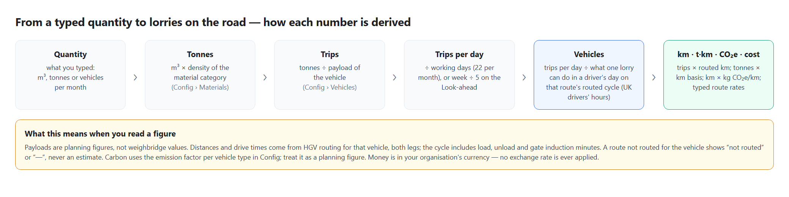
Everything you type is a quantity per month on one route for one material and one vehicle type. The platform converts it to tonnes using the material's density, to trips using the vehicle's payload, and to vehicles using how many trips one lorry can make in a 10-hour shift on that route's measured cycle. Distances and drive times come from HGV routing for the exact vehicle, out laden and back empty. Section 11 explains each step and what "planning figure" means.
2. Getting started
2.1 Signing in
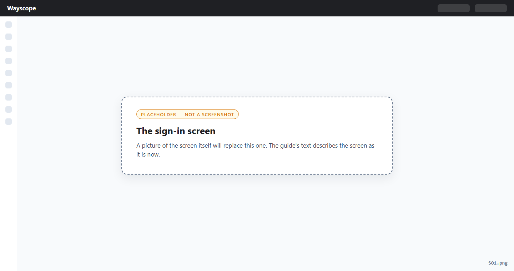
- Open the site address. Before you sign in it shows the public map, or its password box. That box is for the map password, not for your own password.
- Press Staff sign in at the top right. Type your Email and Password, then press Sign in (or Enter). The eye at the end of the password box shows or hides what you typed.
- Your login is your own. Your administrator adds it on Users, and you get an email with a link to choose your password; the link works once, for 72 hours. Use at least 10 characters: three random words are easy to remember and hard to guess.
- A sign-in lasts 12 hours. On your own computer you can tick Keep me signed in on this device for 30 days; never tick it on a shared computer.
- Forgot your password? under the button sends a link to your email that works once, for 60 minutes. Choosing a new password signs you out on every other device. If no email arrives, ask your administrator to send a link from Users.
- After five wrong passwords for one email in 15 minutes, that email has to wait 15 minutes; the message says so.
- Your name comes from your login and is stamped on the lines you submit, the weeks you confirm, the settings you save and any carbon target you set: Mine only and Withdraw… on the Forecasts page go by it. Your name is on the button at the right of the header; open it to see your team and to change your password.
- Sign out ends your sign-in at once, everywhere that browser could use it. This guide and the staff pages close; the public map stays open in that browser until your sign-in would have ended. Your last page and your Appearance choice are remembered in this browser.
- Until Saturday 31 October 2026, the shared team codes still work. Sign in with a team code instead, under the button, opens the old form: your name in Your name and your code in Access code. The eye at the end of the code box shows or hides it, and spaces before or after it are ignored. That access code isn't recognised means the code is wrong or has been changed. The code is kept for this browser tab only: closing the tab signs you out, and you sign in again. Nobody checks the name typed with a code. Signing in with a code opens the public map and this guide in this browser for 12 hours; Sign out closes the guide and leaves the map open. When the codes end, the link goes and only your own login works.
- Back to the map returns to the public map without signing in.
2.2 Finding your way around
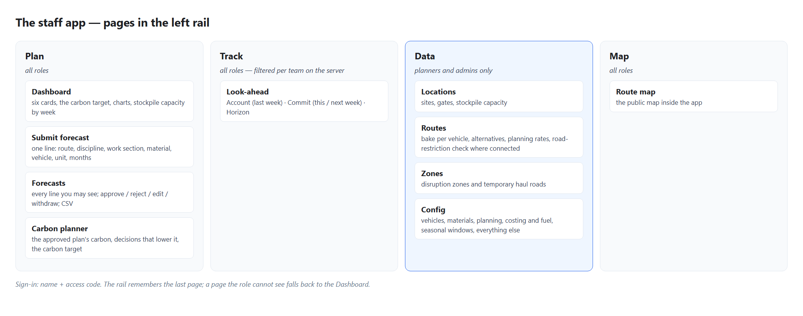
The menu on the left (the rail) has four groups: PLAN (Dashboard, Submit forecast, Forecasts, Carbon planner), TRACK (Look-ahead), DATA (Locations, Routes, Zones, Config — planners and admins only; Users — admins only) and MAP (Route map: the public map inside the app). Each page has an icon.
- Find a page… at the top filters the menu as you type; Enter opens the first match and Esc clears the box. Ctrl K (Cmd K on a Mac) opens the menu and jumps to the box from any page.
- At the foot: User guide opens this guide in a new tab; ‹ Collapse folds the menu to icons and › opens it again; under them, your name and your role or team.
- The app remembers the page you were on and whether the menu was folded. A page your code cannot open falls back to the Dashboard.
- For a planner, the Forecasts entry shows how many lines are Pending or Mixed (§5) while the menu is open.
In the header:
- Vehicle names — vehicles are named in English, as on Config → Vehicles. Small buttons to switch the names to another language appear (on a wide enough window) only when your organisation's vehicle list carries names in one; nothing stored changes. The demo's list is English only, so it has none.
- Appearance — the round, half-filled button picks the look: Ink (the default), Light or Dark, and under it the accent: Orange (the default), Blue, Blue shades or Orange shades, the colour of the buttons and of the chart series. In every accent the first series is the plan and the second what was delivered; a warning is a triangle and a problem a diamond beside its word, whatever the colours. It changes colours only, in this browser.
- Your team's name (team code) or your role, and Sign out. On the demo, the place for your organisation's name reads "Your organisation's name appears here".
- The staff pages are made for a desktop browser, ideally 1440 px wide or more. The Carbon planner also works on a phone; the other staff pages have no phone layout yet. The public map does. Below 768 px the left menu shows its icons only; › at its foot opens it over the page until you pick one.
2.3 On the demo scheme: the bar and the tour
On the demo, every screen — the public map, its password box, sign-in and every page — has a bar under the header that reads FICTIONAL DEMO SCHEME · NOTHING HERE IS REAL. Your organisation's own site has no bar and no tour.
- Guide, at the right-hand end of the bar, starts a short tour of the page you are on. On the public map and on Route map it starts the map's own tour, once the map has loaded. There is no Guide on the sign-in screen or over the map's password box. Opened at the site address followed by /map/, the map shows the notice at its top, with Guide beside it.
- Nothing opens by itself. Until you have taken a page's tour, a small New here? box offers it — bottom left on staff pages, under the figures bar on the map. Press Take the tour.
- Small pulsing orange dots mark what the tour talks about. Point at a dot, or tap it, to read its tip.
- A tour card has Back, Next and Got it. Don't show again (on a tour card) or × (on the New here? box) hides the boxes and the dots in this browser; Guide still starts a tour. The app and the map each remember this choice separately.
- Your first tour in the app starts with a two-step welcome; the map's tour has none. Config has no tour of its own, so Guide shows the welcome there. Locations, Routes and Zones share one short tour.
- The demo is shared: everyone viewing it uses the same codes, so anything saved there is seen by the next visitor.
Save or Reset to file… on Configuration, Route all (it spends routing calls), Clear all routes, any Delete on Locations, Routes or Zones, Set as the scheme's carbon target or Clear the target, and Withdraw…. Each changes the demo for every visitor, and most cannot be undone.
2.4 On a phone
On a screen narrower than 768 pixels (most phones held upright) the menu on the left gives way to four tabs along the foot: Dashboard, Look-ahead, Route map and More. A phone is for reading: nothing on it changes the plan.
- More lists the pages made for a desktop (Submit forecast, Forecasts, the Carbon planner and, for planners and admins, the Data pages and Config) and this guide. On a phone each of those pages says Open on a desktop to edit this: open the app on a computer, or turn a tablet on its side, to use them.
- Look-ahead on a phone shows one day at a time. Pick a day of this week or next in the strip; today opens first. The day's card gives its tonnes, loads, lorries and lines, then each line with its team, material and flag. Tap a line for its route, vehicle, plan and the week's state.
- Day sheet (PDF), under the day's card, downloads that day as one A4 page to print or hand to the gate: every line with its tonnes, loads, lorries and flag, the totals, and the flags counted by kind. A team code gets its own lines only.
- The Dashboard has no Big screen on a phone. Route map is the public map in its phone layout (§8).
3. The Dashboard
The Dashboard is the plan at a glance, built from the same per-line figures as the Look-ahead. The public map's figures bar counts its own way, so the two can differ slightly for the same months (§11).
3.1 Filters and the six cards
- Filters — along the top: the months (from → to), the team, and the status (Approved, the default; Pending; or All). More filters ▾ adds discipline, unit, material and vehicle. Each filter in force shows as a chip under the title: × removes one, Clear all removes them all, and the count says how many forecast months are in view. The filters apply to the cards and charts, except Planned this week and the carbon target strip; the folded This week and today and Stockpile capacity sections ignore them too.
- The line under the title says how many forecast months sit with a worked-out route, the diesel price in use, and when the page last updated.
| Card | What it shows |
|---|---|
| Material in view | The planned tonnes of every forecast month in view. |
| Deliveries a day | Loads per working day. Each delivery is one two-way movement: a lorry out laden and back empty. |
| Vehicles needed | Lorries needed in the busiest month. Needs routes worked out. |
| Planned this week | The Look-ahead's commit week: tonnes and loads, and how many of last week's lines held to plan. It ignores the filters. |
| Delivered against plan | The week actuals typed so far, as a share of the plan in view. |
| Transport carbon | The CO₂e of moving the material in view, with kg per tonne: lorry-km × each lorry's DESNZ 2026 factor, on routed lines only. Transport only. |
- Point at a card to see how it is worked out.
- Lorry-km, CO₂e and vehicles use the routed distance and cycle for each line's route and vehicle. A route not yet routed for that vehicle adds nothing, and the line under the title counts it.
- Vehicles are lorries, not trips: deliveries a day divided by what one lorry can physically do in a shift.
3.2 The carbon target strip
Under the cards sits the scheme's carbon target, once a planner has set one in the Carbon planner. It shows the target ("x% below the approved plan = N tCO2e", or "a fixed cap of N tCO2e"), who set it and when, and two lines: As forecast (the approved plan as the lines stand) and With the agreed decisions (the same plan with the decisions applied). Each says "on target", or how many tCO2e over or under it is (§6.5).
- These figures are all-in: making the material, transport and waste disposal, on the whole approved plan. The strip ignores the Dashboard's filters. The Transport carbon card counts transport only, so the two never match.
- Planners and admins can open The N agreed decisions to read them. Open the Carbon planner takes you there.
- With no target, the strip reads "No carbon target set yet. A planner sets it in the Carbon planner."
- With a team code, the figures are your team's lines only, against your team's share of the target, with a verdict on each (§6.5).
3.3 Charts and the folded sections
Four charts follow: Material demand over time, Top routes by tonnage, Delivered against plan and Cost over time (planned against fair). Click a bar in Top routes, or a row in Route planning detail, to focus on that line: the cards and charts that follow the filters narrow to it, Top routes highlights its bar and Route planning detail still lists every line. The chip "… only · ✕ show all" under the title brings every line back.
Five folded sections sit near the foot; click a heading to open one:
- This week and today, with the Look-ahead's map — today's tonnes, trips and vehicles, this week to date, and a map of this week's lines.
- All the figures — delivered to date, volume (including Lorry-km, or lorry-mi where your organisation reads miles), cost (planned and fair), and carbon (tCO₂e, kg per tonne, tonne-km, peak month).
- More charts — trips, vehicles needed, carbon over time and the material split.
- Stockpile capacity — below.
- Route planning detail — one row per line: where it runs, with its team and discipline under it; one quantity (Show above the table switches it between Loads, Tonnes and Lorries, and the page remembers it); delivered, CO₂e, the planned and the fair cost; and a status: Clear, Not routed or ROAD LIMIT. The arrow (›) at the left of a row opens its details: the route, the vehicle, the distance a trip, the cycle, lorry-km, all three quantities, the price per tonne, per trip and per km, and a road limit in full. Click a column, or pick one from Sort by, to sort.
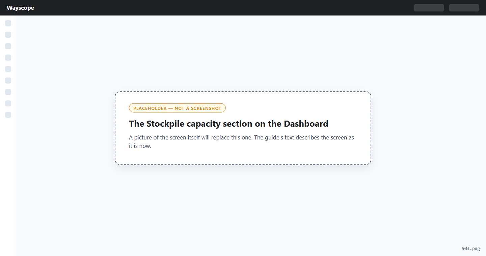
Open Stockpile capacity to see how full each stockpile is at the end of a week — the weeks of this month and next are pills above the chart, the current one marked. A bar turns amber from 90 % and red past its recorded capacity; hover it for what came in and went out that week and the room left. Locations that hold stock but have no recorded capacity are listed beside the chart with their balance and "max —": no capacity recorded is not zero capacity. A week's closing balance is the opening quantity plus the week actuals typed for deliveries there, minus the consumption typed on the Look-ahead's Account view (§7.4); a week nobody reported counts as nothing. The panel is read-only.
Gate arrivals shows, for the month you pick, how busy each gate is against what it can take: a pale track runs up to the gate's capacity (its open minutes ÷ the check-in time a lorry, so 10 hours at 3 minutes a lorry is 200 a day), the coloured bar inside it is the planned lorries a day, and a dark marker with an arrow stands at the capacity. A gate's open minutes are the open hours typed on its gate (Data → Locations), less any no-delivery peak bands set on Configuration → Planning; a gate with no hours typed uses the shift. Each row says its figure in words, for example "99.4 a day · 66 % of 150". A short dashed tick marks 85 % of the capacity: from there a gold bar says Queue likely, and past the capacity a red bar says Over gate capacity — more lorries are planned than the gate can check in even if they arrive evenly. A grey bar has no check-in time typed, so nothing is compared. The fullest gate is at the top. Gate by gate under the chart opens the table: the average gap, the check-in time, the open hours and each team's lorries. These are averages; no hourly peak is typed.
3.4 Big screen
Big screen (top right) is for a site-office TV. It goes full screen, folds the menu away, hides the filters and the table, uses larger type and refreshes every 5 minutes. The bar at the top offers All sections (every section, one under another), Rotate (one section at a time, every 10 seconds to 2 minutes; a thin line fills while a section is on and the bar names the next one) or One section (1 Today, 2 Figures, 3 Charts, 4 Stockpiles, 5 More charts). In Rotate and One section the section fills the whole screen, with figures and chart text sized for reading across a room. To pin a screen to one section, add #dashboard/1 to #dashboard/5 to the address. The Figures section also carries the carbon target as tCO2e target, all-in. Press Esc or Exit big screen to leave.
3.5 CLP monitoring
A Construction Logistics Plan (CLP) is monitored against what it promised. CLP monitoring, a folded section on the Dashboard, draws the plan's side of that from the approved forecast: the figures are planned, not observed, because Wayscope holds no gate log, booking slots or arrival times. Pick the month at the top; the charts that run over time show the months around it. Each chart has an "i" for what it shows and a How it is worked out line with its source. A chart with nothing to draw says what to fill in and where — it never shows a zero in place of a missing figure.
- Routes against their planning cap — two-way movements a day on each route (one load is one movement) against the Max vehicles / day typed in the route's planning block. Red past the cap. Routes with no cap are listed in a line, not compared. The Look-ahead's ROUTE CAP flag compares the same cap with the lorries needed on a day instead.
- Sites against their CLP cap — lorry visits a day at each site against the CLP cap typed on the location (Data → Locations). A visit is one lorry in and out: a delivery, or a lorry coming to load.
- Movements by vehicle type and by Euro class — each one's share of the loads, month by month. The Euro class is the one typed for each vehicle type on Configuration → Vehicles: what the plan assumes the hauliers will send, not a check of anyone's fleet. A vehicle type with none typed shows as Not typed.
- Movements and lorry distance by council — for the month, the two-way movements a day and the lorry-miles (or lorry-km) driven inside each council area, laden and empty: the bulletin's figures. A route counts in every area its laden leg enters, so the areas add up to more than the scheme.
- Carbon per delivery and per tonne against the target — all-in carbon (making the material, transport and waste disposal) a tonne and a load each month, as planned and with the decisions agreed with the carbon target, and the target shared out over the plan's tonnes as a dashed line. Per load has no target line: moving material to a bigger lorry makes fewer, heavier loads, so the carbon a load can rise while the total falls.
- Lorry trips avoided — the loads each month as planned and with the agreed decisions, the difference and the lorry-miles it saves. Only a decision that changes the lorry, the supplier or the route changes trips.
The caps, sites and councils are the whole scheme's, as the public map shows them; with a team code the vehicle, carbon and trip charts show your team's lines and your share of the target.
CLP pack (PDF) and CLP pack (XLSX), beside the month, download the same charts for the month to share with the CLP working group: each chart with data, its figures as a table, how it is worked out and its source; the charts that cannot be drawn yet are listed with what they need. On the demo scheme every page and sheet carries the demo notice.
4. Submitting a forecast
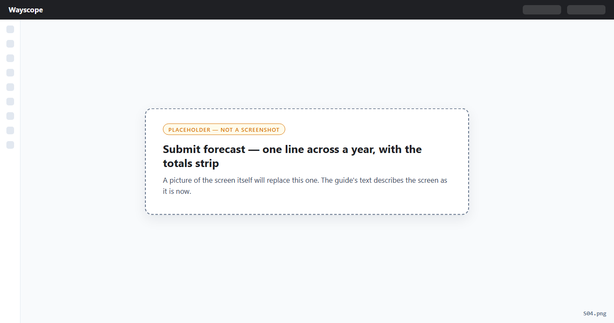
A forecast line is one material moving on one route with one vehicle type, month by month. If the same material will move on two vehicle types, that is two lines. Fill the form top to bottom:
| Field | What to choose | Notes |
|---|---|---|
| Origin → Destination | Where the material moves from and to | The Route reference fills in by itself; where two routes join the same pair, it becomes a list to pick from. Only pairs that exist on the network are offered — an origin must supply the material category and the destination must receive it. Under it you see the route's team and one-way distance, or "not routed — no routed distance yet". If there is no route for a pair, ask a planner to create it. |
| Team | Locked to your team for a team code | A planner must pick the team (Team (required)); the line cannot be saved without one. |
| Discipline | Your organisation's list of disciplines in scope | Two disciplines can share a route and month; a grey note and a caution on save make sure both are visible. |
| Work section | Your programme's sections (WS1, WS2 …) | Bands overlap on the ground, so the section belongs to the line, not the site. "Not configured yet" means your organisation has none set up. |
| Material category | Earthworks / soil, Small aggregate, Large aggregate / ballast, Precast / concrete, Steel / rail, General / imported, Ready-mixed concrete, Precast units, Structural steel / rebar, Asphalt | Sets the density used for m³ ↔ tonnes and which vehicles are allowed. Ready-mixed concrete is typed in m³ and carried by the two concrete mixers only; precast units and asphalt are typed in tonnes; steel (Steel / rail and Structural steel / rebar) can only be typed in tonnes — the form offers nothing else (Config → Materials, Tonnes only). |
| Material description | free text, optional | For your own reference on the line. |
| Vehicle | Your organisation's planning vehicles are listed first, other vehicles below | In Great Britain the planning vehicles are UK trade names (Rigid 8-wheeler, Artic Tipper and so on). A vehicle greyed out and labelled "not used for this material" is not allowed for that category. The payload of the vehicle you pick is what turns quantity into trips. Battery electric lorries are never offered here; they are tested in the Carbon planner. |
| Input unit | m³, tonnes or vehicles | Steel / rail and General / imported are entered in tonnes (not volume-convertible). The strip shows the conversion. |
| From year / To year | Any range in the five-year horizon | One row of twelve monthly cells per year. Narrowing the range later never deletes months outside it. |
4.1 The totals strip: movements, vehicles, price and carbon
As you type, the strip under the months updates:
- the total in your unit, about how many tonnes and vehicle loads that is, and the density, payload and working days used;
- average and peak movements a day (the month's loads divided by 22 working days), vehicles needed (average and peak) — the movements a day divided by the trips one lorry can make in a shift on this route with this vehicle — and average and peak material a day;
- the price: Fair £ (model) for the range, per tonne, per trip and per km (or mile), and Planned £ from the route's own quote or the target rate (or "rate not set"). Each month box shows its own fair price underneath. The fair price is a floor for negotiation, never a quote;
- Carbon of these cells in tCO2e, split into material, transport and waste disposal (surplus going to a tip or recycling site counts disposal instead of material). Hover it to see what is counted;
- the scheme's carbon target, with the approved plan as forecast and with the agreed decisions (§6.5). Your cells join those figures only once a planner approves the line.
Vehicles needed, transport carbon and the fair price need the route to be routed for the vehicle. If it is not, the strip says "not routed" and nothing is estimated in its place. Tell a planner: routing is a one-click action on the Routes page.
4.2 Notes and warnings you may see
- Seasonal restriction — where your configuration defines a seasonal window (for example a spring-thaw season when axle-weight limits are likely on secondary roads), a quantity in that window on a restricted vehicle shows the window's warning. It warns; it does not block or re-route. With no windows configured, nothing is shown.
- Material and discipline — if the material is not one the chosen discipline normally moves, an amber note says so. It is advice, not a rule.
- Other lines on this route — before you save, a grey note lists the other lines already on the route and who submitted them, so the same lorries are not counted twice.
- Not routed — the route has no route worked out for this vehicle yet. You can still submit; the line simply carries no distance or vehicle figures until a planner routes it.
- Caution on save — another line already exists on this route (for example a second discipline). Both stay; the caution makes sure you know.
4.3 Saving, editing and withdrawing
- Press Save & send for approval. It writes every month in the range; a month left blank or at 0 is removed. The line appears on the Forecasts page as Pending until a planner approves it.
- Every month you save goes back to Pending, even one that was already approved. It leaves the Look-ahead's Commit and Account views and the public map until a planner approves it again (Horizon still shows its weeks, marked "month is now Pending"), so only re-save an approved line when the plan has really changed.
- Clear year (or Clear 2026–2027 for a range) empties the boxes on screen; nothing is removed until you save.
- To change a line later, open ⋯ beside it on the Forecasts page and choose Edit in Submit forecast — the whole year range reopens in this form.
- Withdraw… (also under ⋯) removes the whole line across every year it covers; the confirmation tells you the span and the number of months. A team code can withdraw only lines saved under the name it signed in with; a planner can withdraw any line.
5. The Forecasts page
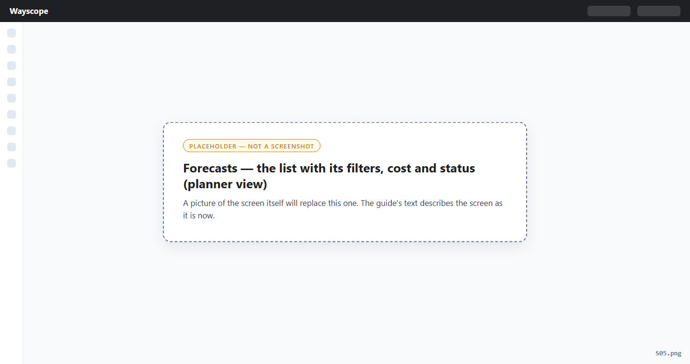
Every forecast line you are allowed to see, one row per line (route, discipline and work section) across every year it covers.
- Carbon — one line under the title gives the scheme's carbon target, the approved plan as forecast and with the agreed decisions, and what the lines waiting for approval would add. These are all-in figures, refreshed after Refresh, Approve, Reject or Withdraw.
- Filters — the search box (routes, places, materials, submitters), Status (with a count for each), Team, Discipline and Mine only (lines saved under the name you signed in with). Each filter in force shows as a chip; × removes it and Clear all removes them all.
- Columns — the route's two ends, with the team and the material under it; the total (Show above the table switches every line to Tonnes, Loads or Lorries, so lines typed in different units compare, and the page remembers it); Planned and Fair cost; and the status. Click Route or the total to sort, or pick Total, Months or Route from Sort by.
- Planned is the route's rates (marked "target" where the Config target rate is used, or "rate not set"); Fair is the price from the model. The arrow (›) at the left of a row opens its details: the route id, discipline and section, the vehicle, the months and years, the quantity as it was typed, the price per tonne, per trip and per km, the approval, a rejection reason in full, who submitted the line, and a road limit in full.
- Refresh reads the list again. Export CSV downloads the lines on screen, with tonnes, trips and the planned and fair prices. A team code also has Submit a forecast.
- ⋯ on a row holds Edit in Submit forecast, Withdraw… and, for planners, Reject…, with who submitted the line.
| Status | Meaning |
|---|---|
| Pending | Submitted, not yet approved. Nothing downstream (the map timeline, the Look-ahead, stock, the carbon target's figures) reads a Pending line. |
| Approved | Approved by a planner. Weeks are created for it, it plays on the public map's timeline and it appears in the Look-ahead. |
| Rejected | Returned with a reason, in full in the row's details. Edit and resubmit. |
| Mixed | A line that spans several months with different statuses. |
The status column shows what needs a person first: Rejected, then ROAD LIMIT (the line's lorry is over a weight, height or width limit its route runs along, so an approver sees it before approving), then Pending or Mixed; otherwise Approved. The approval itself is always in the row's details.
A No team chip under the route means no team is set on the line. Only planners can see such a line until someone edits it and re-saves it with a team.
5.1 For planners: approving and rejecting
- Approve is the button on the row. Reject… is under ⋯. Both act on the whole line (route, discipline and section), every month it covers, not on the whole route.
- Rejecting asks you for a reason; with no reason, nothing changes. The reason is in the row's details (the arrow at the left), so the submitter can read it.
- Approving a month creates its weeks in the Look-ahead immediately and puts the line on the public map. Rejecting an approved month, or a re-save that sends it back to Pending, deletes none of its weeks, typed actuals included. They leave Commit, Account and the public map, stop refreshing, and Horizon marks the line "month is now Pending" (or Rejected) until it is approved again.
- Approval does not check that the route is routed for the vehicle. The Look-ahead will flag a line not routed yet (NOT ROUTED) and show trips only. Route before you approve, or straight after.
6. The Carbon planner
The Carbon planner (PLAN → Carbon planner) shows which planning decisions would lower the carbon of the approved plan most, and ends with the scheme's carbon target. Its figures are planning estimates, not a National Highways Carbon Tool return. open it in the app →
6.1 How the page works
- It runs in six numbered steps, top to bottom: 1 Your approved plan, 2 Materials, 3 Lorries and routes, 4 Surplus material, 5 Result and 6 Carbon target.
- It starts from the approved plan: every approved line, every month. Pending and rejected lines are not in it. A team code sees its own team's lines; planners and admins see the whole scheme.
- Your choices in steps 2 to 4 build one alternative. Nothing you try there is saved, and the approved plan never changes. Start again (top right) clears your choices; it does not touch the target.
- Once you choose something, a strip at the foot of the screen keeps the result in view; See step 5 jumps to it.
- Explanations and tables sit in folded sections: click a heading to open one. Point at a figure or a factor to see where it comes from.
- The totals in steps 1 and 5, and the carbon target in step 6, are all-in: making the material (A1–A3), transport to site and back (A4), and taking surplus away and disposing of it (A5). A few tables count transport only and say so: Diesel or battery electric, Three ways to count the same haul, and the transport rows of How the plan compares. Site plant, site energy, staff travel and traffic on the finished road are not counted.
6.2 Steps 1 to 4: your plan and your choices
- 1 Your approved plan — its carbon in tCO2e, its lorry loads and the lorries needed in the busiest month. An amber line says if anything is left out, such as lines with no route distance yet (their transport is not counted). What this counts gives the detail, the split into material, transport and waste disposal, and a well-to-wheel figure, which adds producing the fuel or electricity and sits beside the total, never in it.
- 2 Materials — for each material: Recycled content (a slider from 0 to 100 %, where the Government publishes a recycled factor; otherwise greyed out with the reason), Reused material (where a reused factor is published), and Use a supplier EPD: type the supplier's figure in kgCO2e per tonne and its EPD reference. The result does not update until the reference is there. An EPD replaces the Government factor, so recycled content and reuse no longer apply to that material. Earthworks soil has no Government production factor, so earthworks count transport and disposal only.
- 3 Lorries and routes:
- Battery electric lorries — one tick box; it swaps each lorry for its electric version where Config has one.
- Vehicle choice, for each material — electric versions are marked "scenario only": tested here, never offered on a forecast.
- Haul distance, for each material — 50 % to 150 % of the planned route; below 100 % stands for a nearer supplier.
- Supplier and route, route by route — pick another supplier of the same material to the same place, or another haul route the routing service offered.
- Diesel or battery electric, same tonnage — compares the two fleets: lorries needed, loads, kWh and tCO2e (transport only), with each electric lorry's payload, battery and charging. The Government publishes no electric lorry factor, so electric carbon is kWh per km × UK electricity.
- 4 Surplus material — a line going to a tip or a recycling site counts a Government waste disposal factor instead of a production factor; which location types count is set in Config. A tip or recycling site comes with your organisation's package (on the demo: Landfill and Soil recycling); the Locations page cannot give a site those types yet. For each such route you can change the Receiving site and the Disposal method; each method shows its step on the waste hierarchy. Transfer notes reminds you that each transfer still needs a waste transfer note. If no surplus leaves site, the step says so.
6.3 Step 5: the result and the summary PDF
- The new total in tCO2e, how much lower or higher it is than the approved plan (in words and %), and the change in lorry loads and lorry-km. Until you choose something, it asks you to make a choice in steps 2 to 4.
- Which decisions change carbon most — each kind of decision tested on its own against the approved plan, ranked, with a bar and its effect on lorry loads. Green is lower and red is higher; the words always say which. Your decisions lists your choices in words, and The result in full says whether the decisions affect each other.
- How the plan compares — the plan and your alternative against published references, never an invented limit: transport and all-in kgCO2e per tonne, kgCO2e per tonne-km against the DESNZ 2026 national average for the same lorry sizes, the laden share of lorry-km (every return is counted empty), the share of zero-emission deliveries beside National Highways' 2040 commitment, and tCO2e per million of programme spend if you type the spend.
- Three ways to count the same haul — transport only, in four rows: Wayscope's figure (per vehicle-km, both legs); the same with producing the fuel or electricity added (well-to-wheel); the National Highways Carbon Tool method (for comparison); and what a tonne-km calculator gives. The Carbon Tool counts a different way and reads higher. Never quote one as the other.
- Download the summary (PDF) — one page: the approved plan beside your alternative, your decisions in words and ranked, what the figures count, and a Commentary box. To fill the box, open Add a commentary (optional) first: up to 1,500 characters, printed as typed and not saved. The page is stamped "Wayscope planning estimate, DESNZ 2026 basis, not Carbon Tool figures". It does not show the carbon target.
- If a choice is refused, step 5 and the strip at the foot say Not updated: with the reason.
About these figures, at the foot of the page, lists every factor used with its source, year and status — Verified (matches the published row), Derived (worked out from published rows) or Assumption (typed or estimated) — then the known limits, what is not built yet, and who acts on the results.
6.4 For planners: setting the carbon target
When the client agrees which decisions to adopt, a planner or admin records them as the scheme's carbon target in step 6. No admin token is needed.
- Make the agreed choices in steps 2 to 4 and wait for step 5 to update.
- Under Hold the target as, pick % below the approved plan (it follows the plan as more lines are approved) or Fixed tCO2e cap (it stays the same).
- Press Set as the scheme's carbon target. If a target exists, you are asked before it is replaced. The button stays grey until the page has read the current target, the result has updated and your choices lower carbon; the line under it says which. A cut of less than 0.1 % is refused.
- Wayscope works out every figure from the approved plan and your decisions; the page sends no figure.
- With a target saved, pressing the other option under Hold the target as switches how it is held, after you confirm. Every number is kept.
- Open the agreed decisions puts the stored decisions back into steps 2 to 4. Clear the target removes it, after you confirm.
- "Set by" shows the name typed at sign-in, and the date. Codes are shared, so the name is not checked, and only the latest target is kept.
6.5 Reading the carbon target
Once set, the target shows in step 6 and on the Dashboard (§3.2), Forecasts (§5) and Submit forecast (§4.1), in the same words. It does not show on the public map or in the summary PDF.
- Target — "x% below the approved plan = N tCO2e", or "a fixed cap of N tCO2e (x% below the approved plan when it was set)".
- As forecast — the approved plan as the lines stand. Forecast lines do not record decisions such as recycled content or electric lorries, so with a % target this line always reads over the target, by the agreed cut. That is expected.
- With the agreed decisions — the same approved plan with the stored decisions applied, worked out again on every read. This is the figure to watch.
- Each says "on target" (within 0.05 tCO2e either way), "N tCO2e over the target" or "N tCO2e under the target".
- Lines waiting for approval are not in these figures; Forecasts and step 6 say how much they would add.
- If a route or lorry named in the decisions has gone, the second figure cannot be worked out: the page says the agreed decisions no longer fit the plan, and a planner needs to set the target again.
- Every target figure is all-in. The Dashboard's Transport carbon card and the map's CO₂e count transport only, so they read lower and never match.
- With a team code you see your team's own share of the target ("Target for your team's lines: N tCO2e, x% of the scheme's target"), and your own team's approved lines as forecast and with the agreed decisions, each with its verdict against your share. The share is the scheme's target split by each team's plan with the agreed decisions, so the shares add up to the target. If the agreed decisions no longer fit the plan, there is no share until a planner sets the target again. You do not see the list of agreed decisions, and you cannot set, switch or clear the target: step 6 reads "Your planner sets the scheme's carbon target."
7. The Look-ahead
The Look-ahead turns an approved monthly forecast into a weekly plan, and the week that contains today into a daily commitment sheet for hauliers. It has three views, switched with the buttons under the page title: Account (last week — what actually happened), Commit · this week (the plan by day) and Horizon (the coming weeks as totals). Beside them, this week | next week chooses the week (§7.3). The page opens on the view you used last in this browser, and on Commit the first time. A team code sees its own team's lines.
7.1 How weeks work
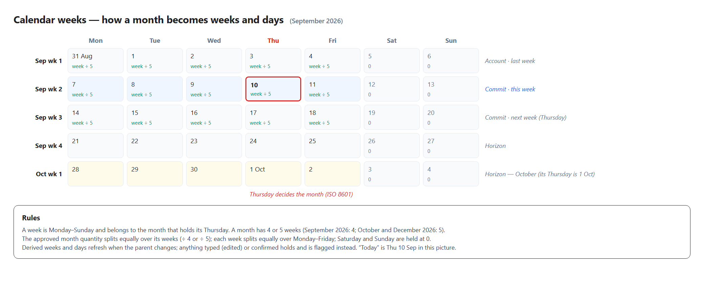
- A week runs Monday to Sunday and belongs to the month that holds its Thursday — ISO 8601 week numbering. A month therefore has four or five weeks; September 2026 has four, October and December five.
- An approved month's quantity is split equally over its weeks, and each week equally over Monday to Friday. Saturday and Sunday are held at zero and not shown.
- Anything you type over — a week or a day — stops following the split and is marked as typed. If the month is later re-approved with a different quantity, typed weeks keep their values and show PARENT CHANGED rather than silently moving.
7.2 The weekly rhythm
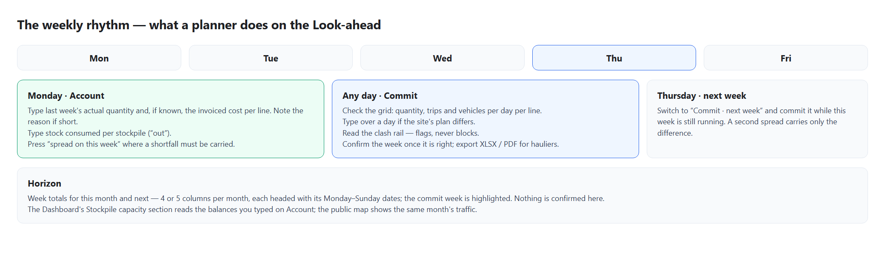
7.3 Commit view — this week by day
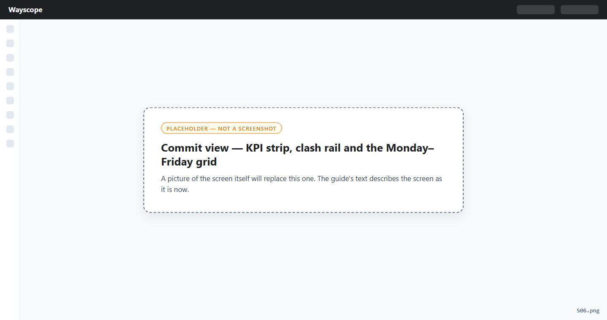
The header shows the week's dates. The KPI strip reads:
- planned this week (tonnes), trips, and vehicles a day at the peak;
- t·km (tonne-miles where your organisation reads miles);
- the diesel price with its date, and the fuel surcharge (BAF);
- planned cost: how many lines are priced and how many at the target rate, the + BAF figure and the fair price — or "no rate typed, no target set";
- last week's shortage;
- last week delivered: n of m lines — a line counts as delivered when the actual reached 98 % of the plan.
The clash rail under the strip lists flags for the week — up to three, then "+N more". Flags never block anything; they tell you what to look at (§12.1 lists them all). The most important for a team is SHARE: another team is on the same route, or the same origin and destination, on the same day. You are told you share it — by the other team's name — without seeing their quantities.
Under the rail, where your country has a road-restriction provider, one line says when the routes were last checked, for example "Road closures (National Highways): checked … UTC". Press check now (or re-check) to check every route again; it takes about a minute and the page refreshes itself. "NOT checked" means exactly that, not "no restrictions". "… not checked since the route was worked out — the rest as of …" names routes routed since the last check; press check now to include them. "The last check could not reach …; the stored result stands" means the provider did not answer, so the earlier result is still shown. Any code can press it.
Gates this week, under the grid, shows each gate's planned lorries a day this week, every team together, against what it can check in: the bars are the planned lorries, the dark step line what the gate can check in (zero on a day it is closed), the dashed gold line 85 % of that. From 85 % a day says Queue likely in gold; past the capacity, or on a closed day, Over gate capacity in red — each with its icon and its percentage, and each raises a GATE NEAR CAPACITY or GATE OVER CAPACITY flag on the rail. The busiest gate is first. These are planned arrivals spread evenly over the gate's open hours; no hourly peak is known. The days are this page's own (the month spread over its calendar weeks, rounded up a day), so a day can be busier than the Dashboard's month average.
Each row of the grid is one line: origin → destination, with its team and material under it. Status shows the one thing to look at first: a flag in short form (§12.1), ROAD LIMIT before any other, with "+2" when two more kinds of flag are on the line; with no flag, the week's state (Derived, Edited or Confirmed). Show above the grid switches every day cell between Tonnes (the planned quantity), Loads (trips) and Lorries (vehicles needed); the page remembers it. Today's column is tinted. Week is the line's total in the same unit. A total row at the foot adds up each day.
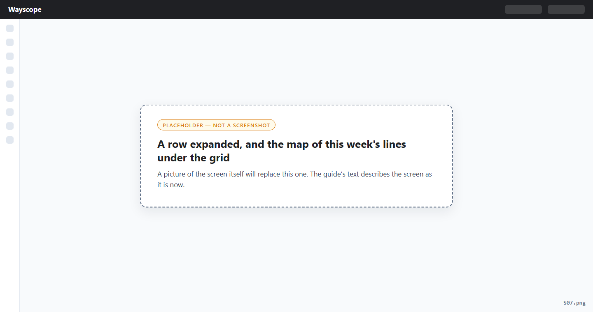
- Press the arrow (›) at the left of a row, or move to it with Tab and press Enter or Space, to open its details: the route, team, section, material and vehicle; each flag in full; every day's plan, tonnes, loads and lorries; the distance per trip and per week, the peak vehicles, t·km, the cycle time (‡ = return leg estimated), cycles per vehicle a day, and this week's cost — or "Rate not set" — with the + BAF and the fair price. A row you open stays open until you close it or the browser tab.
- Type over a day: in Tonnes, click the day's figure, type the new quantity and press Enter. Esc, or clicking elsewhere, saves too: to undo, type the old figure back. The day shows ✎ and no longer follows the week ÷ 5. A confirmed week cannot be typed; re-open it first. If the days then no longer add up to the week, the line shows DAYS ≠ WEEK — a flag, not an error; you can still confirm.
- Line not routed yet — a route not routed yet for the vehicle shows loads but no lorries (—), and its status says NOT ROUTED. Nothing is estimated in its place; ask a planner to route it.
- The week map under the grid draws this week's lines in their team colour, with a dark dot at the origin and a red dot at the destination; hover a line for its quantity and trips. A line with no route worked out is listed under the map rather than drawn as a straight line.
Confirming the week
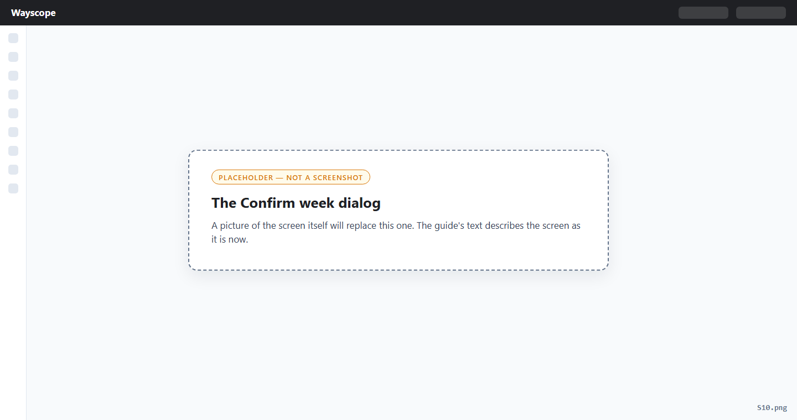
Confirm week (the green button, top right) is one act for the whole week: every planned cell locks, actuals stay typeable, and the sheet becomes the commitment. The dialog names the week and the number of lines and has four free-text notes — weather, wetness, traffic, other — for the record. Confirm remaining lines appears when some lines are already confirmed. A confirmed week can be re-opened to change the plan; nothing is deleted.
- With a team code, Confirm week confirms your team's lines only.
- The first confirm that finds a diesel price locks the base for the fuel surcharge (BAF); later confirms never move it.
This week / next week
On Thursday you may want to commit next week while this week is still running. Press next week beside the view buttons; the Commit button then reads Commit · next week. Its days are created when you open it, and can be typed and confirmed in the same way. The switch moves Account on a week too, so Account then shows this week. A shortfall spread on Thursday with a partial actual and again on Friday with the full figure carries only the difference — the platform never counts the same shortfall twice.
Exporting for hauliers
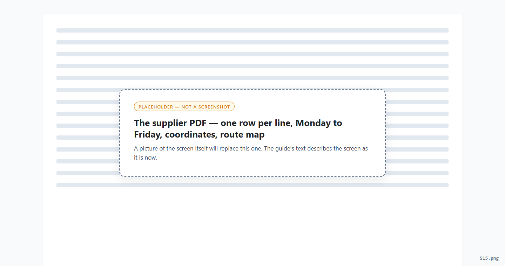
- Both buttons are on the Commit view.
- Export XLSX — a workbook: the Commit week sheet (one row per line per day: quantity, tonnes, trips, vehicles, km, t·km, cost, cycle and its source, day status), a Fuel sheet (the diesel price and surcharge terms used), a Clashes sheet and an About sheet. Weekdays only.
- PDF — the one-week commitment sheet: landscape, a route map on the first page, one row per line sorted by origin, Monday to Friday columns with quantity and
trips tr · veh, origin and destination with coordinates, the week total, km per trip and the cost where a rate is typed, then the flags and the footer caveats. It says CONFIRMED only when every line is; otherwise DRAFT — not confirmed. It is a commitment sheet, not a delivery note: payloads are planning figures, not plated weights, and km come from HGV routing. - If the PDF's map is a drawn schematic rather than a photo map, the caption says the map service could not be reached; the sheet is otherwise identical.
7.4 Account view — what actually happened last week
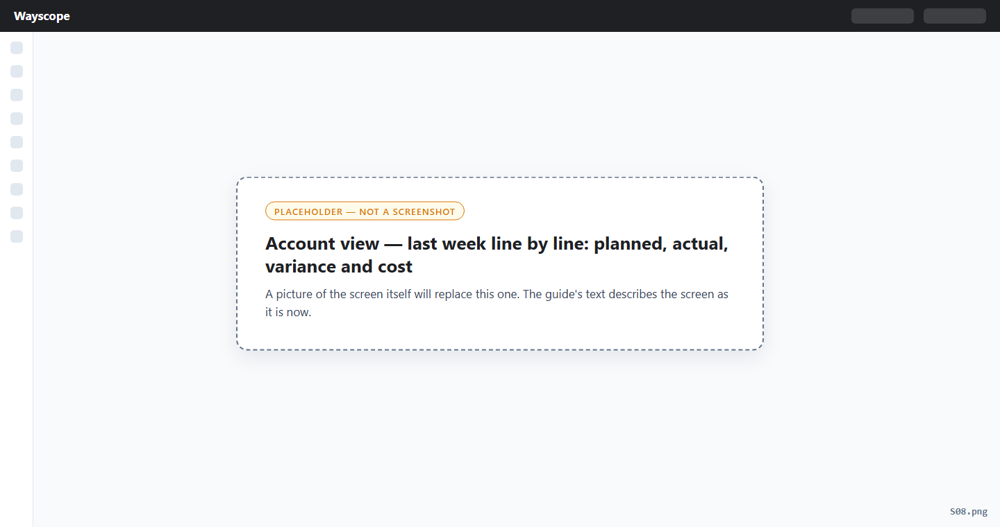
Account shows last week, one row per line: Planned; an Actual box; Variance (planned − actual: red when short, green when held or over-delivered; an empty actual means "not reported", never zero); Planned £ (marked "target" when priced at the target rate, with + BAF under it); Fair £ (model); an Actual £ box for the invoiced or agreed cost of the week; £ var; a Note; and the Action — held, waiting, applied (with how much was carried), or the spread on this week button.
- At the top, the diesel strip shows the price in use. Planners and admins can type the Yard £/L (what the haulier pays; optional) and the Fuel share % (empty means no surcharge); each saves when you leave the box. Under it, four cards: last week delivered (98 % band), the actual moved and how many lines reported, the shortfall not yet carried, and how many lines are open to calibrate (carry into this week).
- Type the actual quantity as it was delivered. Saving an actual never changes next week's plan by itself.
- spread on this week carries a shortfall into the commit week, spread evenly over the remaining weekdays from today. Press it once the figure is known; pressing it again after a correction carries only the difference. It refuses if the target week is already confirmed — re-open the week first.
- Actual £ is the first place the platform records money spent rather than planned; £ var compares it with the planned quote.
- The Stockpiles block at the foot lists each stockpile for the account week: opening balance, inbound (from the typed actuals on routes delivering there — a route nobody reported counts as nothing), an out box for what was consumed, the closing balance and the remaining capacity. Type the consumption once a week; the Dashboard's Stockpile capacity section and the public map's stockpile gauges read it.
7.5 Horizon view
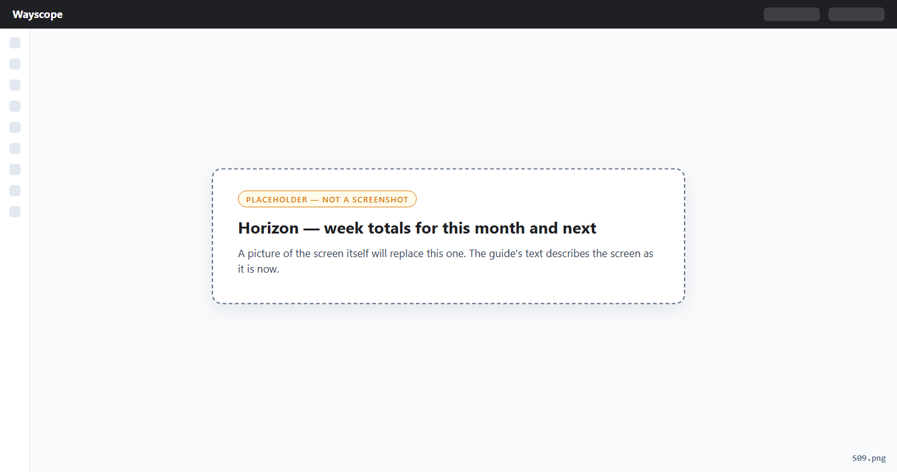
Horizon shows week totals for this month and the next — four or five columns per month, each headed with its Monday–Sunday dates and what the week is for (ACCOUNT, COMMIT, MAKE-READY or EARLY WARNING) — with the commit week highlighted. Each cell shows the plan and, under it, whether the week is still the even split (derived), typed (edited), confirmed, or reported (held, or n short). Nothing is confirmed here; it is the look-ahead in the ordinary sense: what is coming, so make-ready and early warning can happen.
Open the Look-ahead before a meeting: the page reads a lot of data and can take several seconds to load on first open.
Type actuals on Monday, confirm the week once the grid is right, export the PDF for hauliers, and use the next week switch on Thursday.
Read the clash rail before confirming. A ROUTE CAP or STOCKPILE OVER flag will not stop you — it is a planner's call.
8. The public map
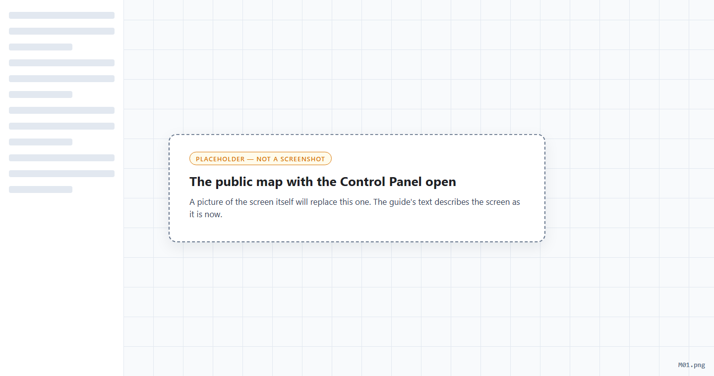
Signed in to the app, the public map opens with no further prompt; visitors use the map password (§1.1). Open the site address followed by /map/, or use Route map in the app's menu (the menu's name for the public map). Distances on the map are in your organisation's unit: miles on the British demo, kilometres elsewhere.
The Control Panel on the left holds, top to bottom:
- Route filtering;
- Layers and basemap, folded away (click it to open): Basemap, Overlays and Haul routes;
- What's moving, while a month is on screen;
- Road closures or Road restrictions, where connected;
- Forecast traffic volume.
On a phone the panel is closed by default; the ☰ button opens it.
8.1 Reading the map
| What you see | Meaning |
|---|---|
| Coloured line along the corridor | Your programme's alignment, from the overlay package your organisation supplies, coloured by the team that owns each stretch; a stretch outside your scope is drawn muted. Ticks with labels mark work-section boundaries at chainage; a boundary the package marks provisional says so. Click the line for the team, the work section, its name and the chainage range. Where the survey has no track, the line is bridged and the popup says it is not a measured line. With no overlay package loaded, no alignment is drawn. |
| Site marks | Seven types, always drawn on top. Circles: quarry (a pick), port (an anchor), site (a white dot), stockpile (a gauge) and other (plain). Rounded squares: compound (a site cabin) and railhead (rails). A site of any other type, such as a tip, is drawn as other. A stockpile fills to its recorded stock, turns red over capacity, and has a dashed outline when nobody has recorded a capacity. Click a mark for its details (§8.5). |
| Dotted green and amber lines | Haul routes: Laden (out) in green and Empty (return) in amber, routed separately for the vehicle. Nothing shows direction — the colours do. Click a route for its name and distance; Full route analysis → opens a panel at the foot of the map. |
| Blue lines with a figure | Approved forecast routes for the months on screen, labelled with their two-way movements a day (§8.3). |
| Thin grey lines under routes | Alternative routes the routing service offered (off by default). |
| Amber dashed line | A temporary haul road drawn by a planner. |
| Red or grey shapes | Disruption zones: red when they affect routing, grey when informational. With the timeline open, only zones in force that month are shown. |
| Grey dashed corridor | An existing rail network, where your overlay package includes one — reference line with the accuracy the package states. Click it for the caveat. |
| Coloured points and lines on roads | Road closures or restrictions from your country's road authority, where one is connected — Estonia (Tark Tee): weak bridges, mass, height and width limits, traffic restrictions, diversions; Great Britain (National Highways): planned closures on the strategic road network, with their dates. See §8.4. |
| Small grey dots at sites | Site gates (from zoom 10); hollow when deactivated. |
- The route analysis panel gives one-way distance, round trip, an estimated haul cycle, trips a day per lorry and a Driving directions link; with approved volume in the From–To months it adds the route's tonnes, trips, CO₂e, peak month and lorries for the peak. Its cycle is a rough figure at the average haul speed set in Config, not the routed drive time. For the figures the plan uses, open the route on the Routes page or the Look-ahead.
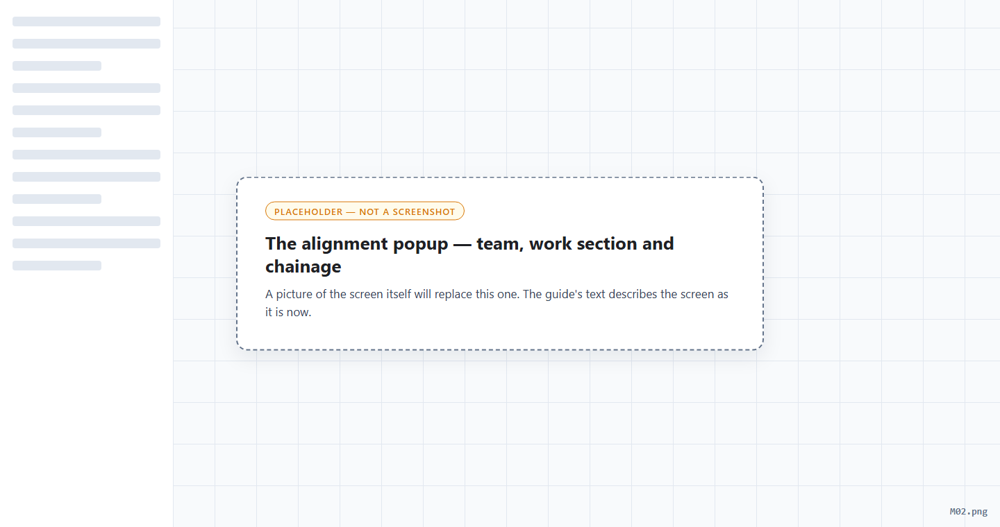
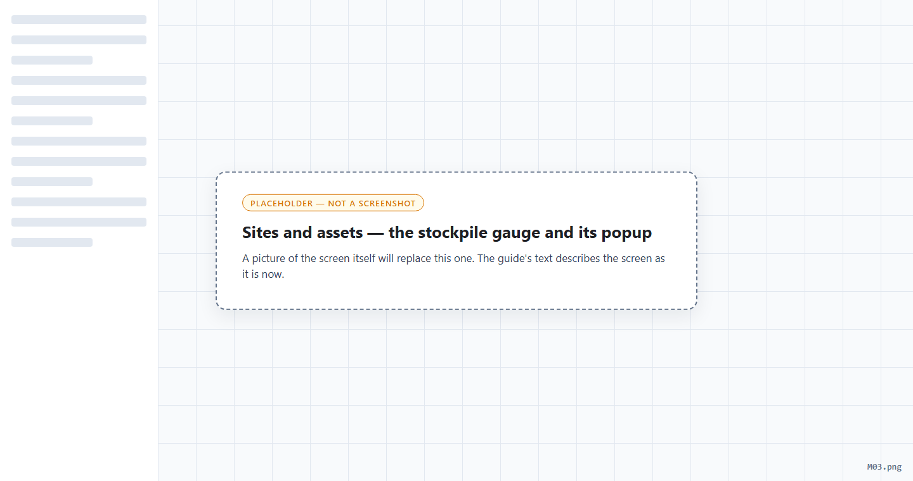
8.2 The Control Panel: filters, layers and basemaps
- Route filtering — origin, destination, discipline and team. The filters apply to the routes on the map, the figures bar, What's moving, Busiest routes and the route conditions (not to stockpiles over capacity). Filter to your team and you see your traffic only. Reset filters clears them.
- Export route map (plan) — under Route filtering, for signed-in staff only (a visitor with the map password does not see it). It draws just the map of the routes the filters show, for one month, as one of the three plans of the CLOCS outline CLP template: a Regional plan of the whole routes (1:20,000 or smaller, fitted to the routes unless you pick a scale), a Local plan (1:2,000, 1:2,500 or 1:3,000) or a Site plan (1:500 or 1:1,000), the last two centred on a site you pick. The legend, the scale, a north arrow and the sites in view are drawn on the map, with a scale bar and the map credit. Download PDF gives one A4 landscape page that prints at the stated scale at 100 %; Download PNG gives the same map as a picture to paste into a document such as the CLP itself (once it is resized, the stated scale no longer holds: use the scale bar). A site plan is a base to draw on: the map shows buildings and road edges, not the Ordnance Survey detail, gates, swept paths or crane positions a CLP site plan needs. Approved lines only; it is a planning document, not an approved CLP.
- Community considerations (staff only: the group shows only when you are signed in as staff, never on the public map's password view) — the schools, hospitals, health centres, community centres, sports facilities, stations and tram stops, cycle routes, bus stops and residential areas near the routes: within 250 m of every route and 500 m of every site. Off by default: tick Show community considerations, then untick any kind you do not want; click a symbol for its name, its source and how far it is from the nearest route or site. Residential areas and sports grounds are light fills under the routes; the rest are small symbols over them, each kind with its own shape and colour. It comes from public sources: schools from the Department for Education's Get Information about Schools, bus stops and stations from the Department for Transport's NaPTAN, and the rest (nurseries too) from OpenStreetMap. They are read once, when a planner or an admin presses Fetch again on Config → Map and bulletin, never when a page opens; the group says when that was and how old each source's data is, so fetch again after adding or changing routes. The exported plans (Export route map) draw it too, with a Community considerations block listing only the kinds in view and the sources' credit (the regional plan leaves the bus stops out, because at its scale they crowd every town; the local and site plans show them); tick Leave out the community considerations on the export card to leave it off. OpenStreetMap is mapped by volunteers, so a place can be missing or out of date: check what matters on the ground.
- Basemap (under Layers and basemap) — Light (default), Standard (3D), Dark and Satellite (Mapbox; called Aerial for a British organisation), plus a national orthophoto where one is connected for your country (today: Estonia's, from Maa-amet). Every overlay survives a basemap switch. 3D buildings are available on the vector basemaps only. Four quick buttons at the bottom left of the map also switch the basemap: Light, Dark, Satellite and Streets (Streets is not in the Basemap list).
- Overlays — Alignment (by package), with a tick box per team so you can hide a team's stretch; Work section boundaries; Alignment (survey, continuous) — the raw survey with every track type, off by default; Chainage markers (thinned by zoom so the corridor is not a smear); Sites & assets, with a tick box per site type; 3D buildings; Site gates; Disruption zones; and Existing rail network, which appears only where your overlay package includes a railway.
- Haul routes — Laden (out), Empty (return), Temporary haul, Alternative routes.
- If no corridor line appears at all, your organisation has not loaded an overlay package yet — an admin does that once (Appendix D, in the admin view of this guide).
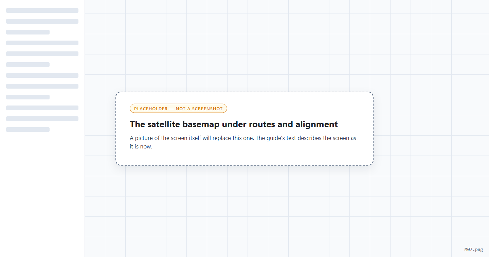
8.3 Playing the months: the figures bar and What's moving
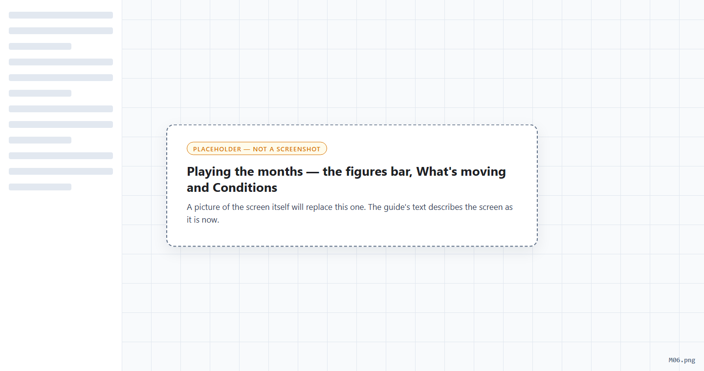
Forecast traffic volume, at the foot of the Control Panel, shows the approved plan two ways:
- Show forecast routes — pick a From and a To month and tick the box. Routes with approved volume turn blue and show their two-way movements a day. Forecast detail table then opens a table of the routes month by month.
- ▶ Play forecast timeline — opens the timeline bar at the foot of the map. Press ▶ to play and ⏸ to pause; ◀ and ▶▶ step one month; drag the slider to jump; the speed box goes from ¼× to 4×; × closes the bar. The timeline runs through every month of the programme, whatever the From and To months say.
While a month is on screen, the routes carrying volume are blue, the sites at their ends are drawn slightly larger and the other sites fade. During play, white dashes run along the blue routes from origin to destination.
The figures bar along the top names the month ("Approved plan · forecast") and gives: Two-way movements a day (one delivery: a lorry out laden and back empty), Vehicles needed, the routes in that month, CO₂e a day and CO₂e to date (approved haulage from the first month up to the last month on screen). If the map is set up to count in tonnes or m³, a t / day or m³ / day figure appears too; as shipped it counts in vehicles, so that figure is not shown. Hover the month for how each figure is worked out. While the timeline is open, a Conditions button at the right of the bar counts what needs attention that month (§12.3).
In the side panel, What's moving splits the month by Discipline, Team or Work section, with vehicles, two-way movements and tonnes a day for each. Busiest routes lists the five busiest; click one to show it on the map.
- Vehicles needed is the sum, line by line, of movements a day divided by what one lorry can do on that route's cycle. A line whose route is not routed for its vehicle is counted as unknown: the label says how many lines are not routed, and a + follows the figure. A line whose route has no line drawn at all is left out of the bar. An empty month shows dashes and "nothing approved", not zero.
- The CO₂e figures are transport only, on routed lines, and follow the filters; if lines are not routed, the labels say how many are left out. Making the material is counted on the Carbon planner, not here.
- The timeline plays approved monthly forecasts. It is a plan, not a live feed.
8.4 Road closures and road restrictions
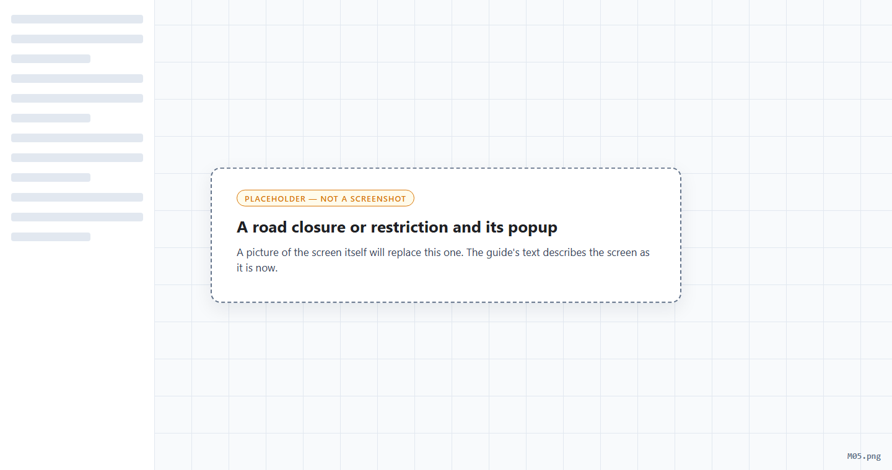
This section applies only where a provider is connected for your country; otherwise the group is not shown at all. In Great Britain the group is Road closures (National Highways' planned closures on the strategic road network); in Estonia it is Road restrictions (Tark Tee). Every layer starts switched off: tick one to draw it. Click a closure or restriction for what it is, the road, its dates and the source. In Estonia the value (for example a 3.2 m height limit) is labelled from zoom 11, and a weak bridge carries a load class rather than a tonnage.
- Whether a vehicle exceeds a limit is judged in the route check, not in this popup: see Conditions (§12.3) and the route's restrictions card on the Routes page.
- In Great Britain every closure that has not yet ended is drawn, including future ones, whatever month is on screen.
- The map reads the provider's data at most every 30 minutes. It is advisory: routes are not re-planned around it.
8.5 Site popups and Street View
Click a site mark to open its details: its type, the team for a compound or the material for a quarry, and for a stockpile with a recorded capacity its stock against that capacity. Where Google has Street View imagery within 50 m, a picture appears in the popup by itself, with its date; if the nearest picture is more than 25 m away, the popup says how far. "No Street View here" means none exists within 50 m; the map checks for imagery before it fetches a picture, so nothing is spent on empty lookups. Filter Routes to this Location shows only the routes to and from that site.
9. Data and settings (planners and admins)
Locations, Routes and Zones share one map; switching between them keeps your view. Above the map: Basemap, Show (which vehicle's routes to draw), Laden out / Empty back, Primary route / Alt 1 / Alt 2, and the Admin token box. Saving on these pages needs the admin token (where your deployment has one set), typed into that box; it is remembered in this browser. On Configuration the admin token box is under More ▾. Paste it into the box, never into the address bar. The line under the title counts locations, routes and zones, and how many routes are routed for the vehicle shown.
9.1 Locations
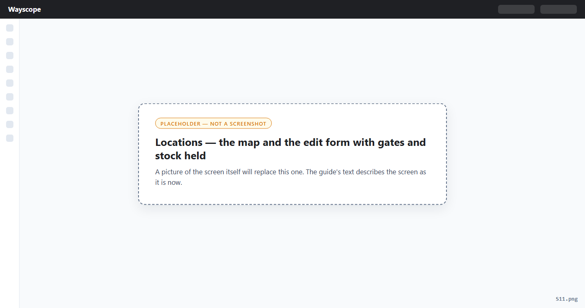
- Press + Add location, then click the map to drop the marker (or type the latitude and longitude). Fill in Name, Role (Origin (supplier), Destination (site) or Both), Type (Quarry, Port, Compound, Site, Railhead, Stockpile, Other; a tip or recycling site keeps the type it was imported with — on the demo, Landfill and Soil recycling — because this list cannot create one yet, and the public map draws it as Other), what it Supplies and Receives (material categories — a route can only be created between an origin that supplies and a destination that receives the same category), Operator / company and Detail / notes, then press Create location.
- Drag a marker to move a location; every route using it is re-routed automatically.
- Gates — once the location exists, + Add gate. A location can have several. Each has a direction (In and out, Entry only or Exit only), a position (typed, or Place on map), a default flag, and two planning times: Induction (min) (safety briefing, applied once per arrival at that gate) and Gate → face (min) travel (ignored on routes that use a drawn haul road, which carries its own time). Open hours (optional) — from and to, and the days the gate is open; blank uses the scheme's shift, every day. What a gate can check in a day is its open minutes ÷ the induction minutes a lorry, less any no-delivery peak bands; the Dashboard's Gate arrivals and the Look-ahead's Gates this week compare the planned lorries with it. Routes start and end at gates, not at the site marker. A route can name a specific gate at either end; otherwise the location's default gate is used. A deactivated gate that a route still names stops that route from routing until the route is re-pointed. With no gates recorded, routing uses the Access gate (optional) point, then the marker.
- CLP cap (optional) — the most lorry visits a day the Construction Logistics Plan allows at the site; one visit is one lorry in and out. Planned visits over it are flagged in the Dashboard's CLP monitoring, never blocked. Leave it blank when the plan sets none.
- Stock held (optional) — for stockpiles and other storage, record the Max capacity (tonnes or m³) and the Opening stock. Without a capacity a stockpile can never show as over; the map draws it with a dashed outline to say so.
- Delete also deletes every route that uses the location. The confirmation warns that its routes go too, and the message afterwards says how many were removed.
9.2 Routes
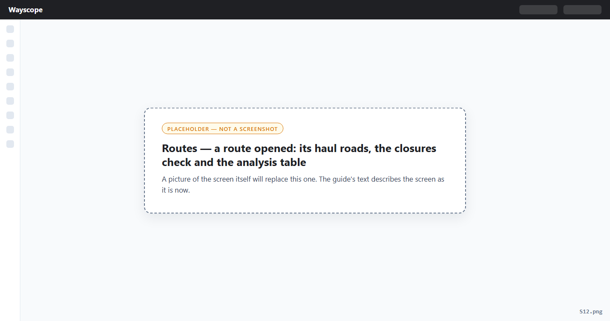
- Create route (the panel on the right): pick Origin (supplier) and Destination (site); Shared materials shows what the pair can carry. Tick the vehicles to route straight away. The route id is filled in for you (R001, R002 …). Press Create & route, or Create route (not routed) if no vehicle is ticked.
- Route on a row asks the routing service for the route as driven by each of its vehicles: out laden and back empty, both as an HGV of that weight, height and axle count. "Routed" is per vehicle; the chips show fully routed (green) or outbound-only (amber). Route all (above the table) routes the whole network for the vehicles ticked on the Create route panel, with Both legs or Laden leg only (half the calls, but no cycle time). It asks first and resets any promoted alternative; a route with a temporary haul road costs more calls.
- Press ▶ on a row for its detail: the route's gates, haul roads and road restrictions, and the analysis table — for each vehicle and option, out and back distance, turnaround, cycle, trips a day, tonnes a day and a month, and CO₂ kg per trip. The notes under the table explain its marks (‡ gate minutes, * return leg assumed, † temporary haul road speed).
- Alternatives — the routing service returns up to three options per vehicle (Primary, Alt 1, Alt 2). Click an option's row to draw it on the map. Make primary promotes an alternative to be the primary. A promotion is lost when the route is next routed (a moved location, an edited end, a zone change, a vehicle change or Route all).
- Vehicles — tick or untick the vehicles a route is routed for. The confirmation names the forecast lines that use each vehicle and warns when the last vehicle would go.
- Edit origin, destination, material or team in place. The impact dialog shows what will change — forecasts and weeks are kept; moving an end clears the stored route and that end's gate, and the affected vehicles are re-routed.
- Planning · Look-ahead (at the foot of the Edit panel) — the optional figures the Look-ahead prices and checks against: Max vehicles / day (flag only) (a planning cap that raises ROUTE CAP, never a block), £ per load, £ per tonne and £ per km (or per mile; the three add up — type what the haulier actually quotes, typically a base per load plus a per-km rate), and the distance basis for the per-km rate and t·km (round trip, the default, or loaded leg only). Press Save planning figures. Nothing is pre-filled. A route with no rate of its own is priced at the target rate (§9.5) and marked "target"; only when neither exists does it read "rate not set". A typed rate is used on its own, never mixed with the target.
- Road restrictions — only where a restriction provider is connected for your organisation's country (Estonia: Tark Tee's standing limits; Great Britain: National Highways' planned road closures on the strategic road network, which count on the Look-ahead only in the weeks their dates overlap, and show as ROADWORKS). Opening a route's row checks that route and lists what lies near it ("Planned closures on this route" in Great Britain). The stored check that the Look-ahead and the exports use is run with check now on the Look-ahead (§7.3). A re-route clears the stored check. Elsewhere the card is not shown.
- Diagnostics card — Check factors.json confirms every vehicle is matched to its configuration entry; Probe HERE runs a live routing call for the selected route and shows what the service returned. Both need the admin token.
- Delete on a row removes that route and its route line; its forecast lines are not deleted with it. Clear all routes deletes every route and keeps the locations; it asks twice and cannot be undone.
Route map (plan) ▾, on the bar above the routes list, makes the same map as the public map's export (§8.2): pick the month, every route or only the route picked in the list, a team or all, then the plan, its scale and (for a local or site plan) the site it is centred on, and download the PDF or the PNG.
9.3 Zones and temporary haul roads
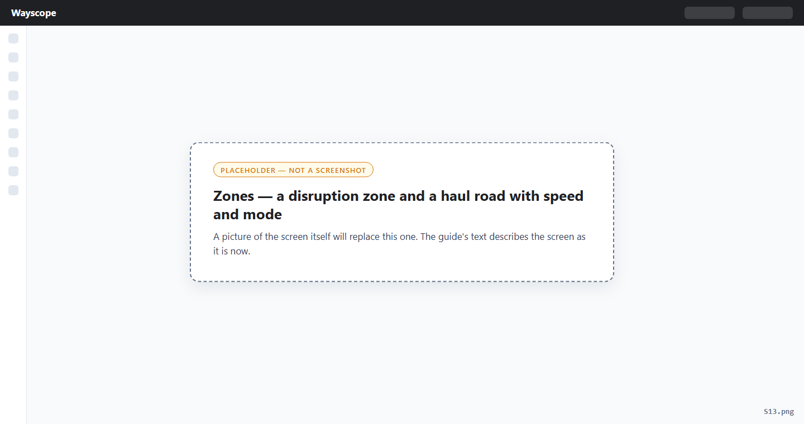
- Disruption zone — press + Draw zone, then Place corners and click the map (Undo and Clear help). Give it a Name, a Kind (Road closure, Weight / height limit, Works area, Other), optional From and To dates (both inclusive; blank means open-ended), a Note, and whether it Affects routing. When it does, its bounding box is sent to the routing service as an area to avoid, every route crossing it is re-routed, and it draws red on both maps; otherwise it is drawn grey for information. The panel prints the exact box that will be sent before you save. Because the service takes boxes, not shapes, a long diagonal zone blocks more than it should — draw several small ones.
- Temporary haul road — press + Haul road, click along the road, and give it an Assigned speed. Mode is Splice (the default: the routing service does not know the road) or Via (it already maps it). Untick Open to traffic for a road that is planned but not open. Attach it to routes from the route's ▶ row (in order, if a route uses more than one). The platform routes to the road's end, uses your line at your speed, and routes on from the other end. The service's own time is kept alongside so the change is auditable. A road with no speed adds distance but no time and is flagged.
- The table shows each zone's routing effect (Avoided, Advisory, Routed through, Not open), its state (In force, Out of window, Inactive) and, for a haul road, how many routes use it.
- Delete re-routes every leg the zone affected; the confirmation says how many routing calls that is. Unticking Active instead stops it steering routes and keeps the record of why past routes went the way they did — usually the better choice.
- Zones and haul roads change routes, not forecasts: an approved forecast is not re-warned when its route gets longer. Look at the Dashboard or the Look-ahead after a change.
9.4 Configuration
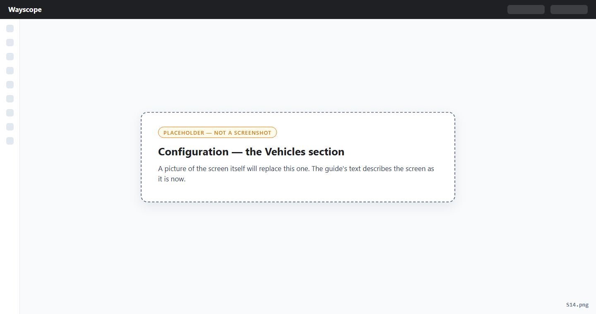
Config (page title: Configuration) holds every number the platform calculates from. Pick a section on the left:
- Vehicles — for each vehicle its name, payload, gross weight (GVW), kg CO₂e per km, load and unload minutes, Euro class (optional: what the plan assumes the hauliers will send for that vehicle type, read only by the CLP monitoring charts; it is not a check of anyone's fleet and changes no carbon figure) and Planning (whether it leads the vehicle lists). In a country with its own vehicle set, such as Great Britain, the leading list is the country's, set in Everything (JSON) under vehicle_sets, and the Planning tick does not change the lists. The electric versions are scenario only (used by the Carbon planner) and their kg CO₂e per km is left empty on purpose: it is worked out as kWh per km × UK electricity.
- Materials — density, default unit, whether volume converts to weight, and which vehicles carry it.
- Planning — working days a month, shift hours a day, average haul speed (used only where a route has no routed time yet), the default loading and unloading minutes, and the No-delivery peak bands (from the CLP): up to four windows when the Construction Logistics Plan allows no deliveries, for example 07:00 to 10:00 and 16:00 to 19:00. Add a band adds one. Each gate with open hours typed loses those minutes from what it can check in a day; Wayscope holds no arrival times, so it cannot check that lorries keep out of them.
- Costing · fuel — the target rate, the diesel price and fuel surcharge, and the fair-price model (§9.5).
- Seasonal restrictions — month windows, restricted vehicles and the message shown (none by default); + Add a window adds one.
- Everything (JSON) — the rest: routing dimensions, the carbon factors, which location types count as a tip or recycling site, the electric lorries' energy use, battery and charger, and your organisation's settings (its name, its word for a team, its currency, its country, and whether it reads km or miles; on the demo, also the demo notice). The country decides which road-restriction, diesel-price and orthophoto services apply.
The top of the page says where the live numbers come from, when they were last saved and by whom, "differs from the file in the repo" when they no longer match the shipped defaults, and "unsaved changes" when you have edited something. The bar at the foot has Discard and Save. Save applies the whole document, everywhere, for everyone, immediately; it needs the admin token, typed under More ▾ at the top right. A changed carbon factor also moves a % carbon target; a fixed cap does not move.
You cannot remove a vehicle that routes are worked out for (every figure on those routes would silently fall to a hidden default and read the same), set a gross weight below a payload, name a vehicle that does not exist in a material category or a seasonal window, or remove the default routing vehicle. The error lists the problems; nothing is stored until they are fixed.
Reset to file… (under More ▾) replaces every value on this page with the defaults shipped with the software, including your organisation's settings: its name, its word for a team, its currency, its country, km or miles and, on the demo, the demo notice. After a reset the demo would lose its "fictional demo scheme" labels and read as a euro, km organisation called Wayscope. The target rate, the fuel settings and the carbon target are stored separately and are not reset. Only reset when you mean to start again.
9.5 Money settings: target rate, fuel surcharge, fair price
All three live on Configuration → Costing · fuel.
- Target rate — £ per load, per tonne and per km (or mile): the planned price for every route with no rate of its own. Every figure it produces is marked "target" on the Look-ahead and the exports. It is never pre-filled. Save target rate needs the admin token.
- Diesel index — the diesel price in use: in Great Britain the Government's weekly road fuel prices (DESNZ), in EU countries the EU Weekly Oil Bulletin, elsewhere typed by an admin.
- Yard £/L (what the haulier pays; optional) and Fuel share % (empty means no surcharge) — a planner or admin types them, with no admin token.
- Fuel surcharge (BAF) — (index ÷ base − 1) × fuel share; the base is locked by the first Confirm week. It shows as a second figure, + BAF, beside each quote: the quote with the surcharge added. The quote itself never changes. The Admin row has its own admin token box, a button to fetch this week's price now, Use this index to type a price when the feed is down, and Reset the BAF base.
- Fair price — the model — driver and lorry time over the cycle, a running cost per km, a margin and fuel use, with a winter uplift and the winter and thaw months. Three of its figures have no public source and are marked ASSUMPTION; replace them with your own. For an organisation in Great Britain the starting figures are a Great Britain set, in £, each with its source; when the page shows a different set it offers Use the Great Britain set, and nothing changes until you Save. It is saved with the page's Save. It is a floor for negotiation, never a quote, and never mixed with a typed rate.
9.6 Users and activity (admins)
Users, at the foot of the DATA group, is for admins. It has three parts.
- People. Add a login: the person's name, their email and their team or role (each team by its name, then Planner and Admin), then Add and send the link. They get an email with a link to choose their password (once, 72 hours). Where this site cannot send email, the link is shown to you with Copy, to pass on yourself. In the list, change someone's team or role with the box on their row (they sign in again to pick it up); Send reset link (or Send invite again before they have a password); Disable signs them out everywhere and stops them signing in, Enable undoes it. You cannot disable your own login, and the last admin cannot be disabled or made a planner.
- Demo logins, under People, are the people who asked for a demo on the website: each has their own link and their access ends 14 days after they asked. 7 more days extends one; Send their link again emails it; Disable turns it off. Adding a staff login with the same email turns a demo login into a staff login.
- Demo leads lists every demo request with that person's login, how often they signed in and which pages they opened; Download the list saves it as a spreadsheet. Someone who asked before 14 October 2026 was sent the shared team code, which stops working on 31 October: Send a personal login gives them their own 14-day link, one person at a time.
- Activity lists every change anyone made (forecast lines saved, approvals, weeks confirmed, actuals, settings, logins added or changed), every sign-in and sign-out, and the pages demo visitors opened, newest first. Pick a person to see only theirs; Download as a spreadsheet saves what is shown. Details shows what was sent, with passwords and keys removed.
Signed in with the shared admin code rather than a login, the page asks for the admin token first. That is how the first admin is added: open Users, type the admin token, add yourself as an Admin, open the link in the email, choose a password, then sign out and sign in with your email.
10. Roles: who can do what
| Role | You sign in with | You can | You cannot |
|---|---|---|---|
| Team submitter | a login for your team | submit and edit your team's forecast lines, and withdraw the lines you saved; on the Look-ahead, for your lines: type days, confirm and re-open the week, type actuals and costs, spread a shortfall, type stock consumption; see the Dashboard and the public map; use the Carbon planner on your team's lines and read the scheme's carbon target | see another team's quantities in the app; approve or reject; set the carbon target; open the Data pages |
| Planner | a planner login | everything above for every team; approve or reject lines; set, switch and clear the carbon target; type the fuel share and yard price; open Locations, Routes, Zones and Config | save on Locations, Routes, Zones or Config without the admin token, where your deployment has one |
| Admin | an admin login | everything a planner can; Users: add people, change their team or role, disable them, send password links, and read the activity log; save Locations, Routes, Zones and Config without the admin token; this guide also shows the admin its technical appendix | — |
Until the shared codes end (Saturday 31 October 2026), a team code opens what that team's login opens, the planner code what a planner login opens, and the admin code exactly what the planner code opens: only an admin login saves without the admin token, and Users needs either an admin login or the admin token.
The admin token is not the admin code. It is a separate shared key for changes to master data and for scripts: anyone who types it into the admin token box can save on Locations, Routes, Zones and Config, whichever of the planner or admin codes they signed in with (a team code cannot open those pages). An admin login does not need it.
Each person signs in with their own login, checked by Wayscope on every request. A team login shows you only that team's lines, wherever you look in the app; the public map is the exception (§1.1). "Submitted by", "confirmed by" and "Set by" are the name on the login, and every change anyone makes is recorded with who made it and when (admins read it on Users → Activity). The shared codes keep working until Saturday 31 October 2026; whoever signs in with one is recorded only as that code.
11. What the figures mean
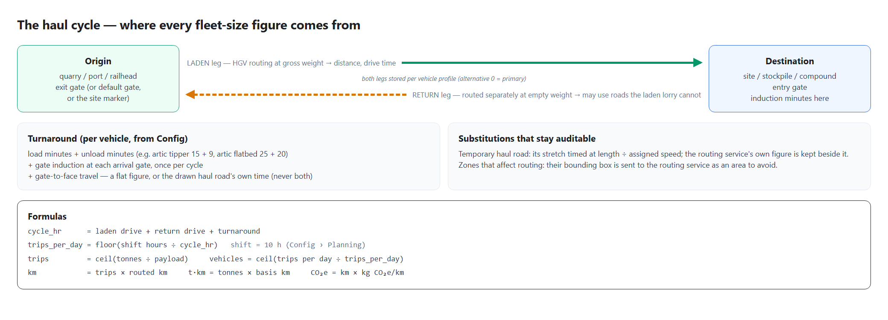
| Figure | How it is derived | What to bear in mind |
|---|---|---|
| Tonnes | m³ × the material category's density; a quantity typed in vehicles × the vehicle's payload. | Densities and payloads are the planning figures in Config, not measured values. |
| Trips (movements, loads) | tonnes ÷ the vehicle's payload, rounded up. One trip is one loaded run. | The payload is a typical carrying limit, not a legal maximum. |
| Movements per day | the month's trips ÷ 22 working days; on the Look-ahead, the week ÷ 5. | The Dashboard calls it Deliveries a day, Submit forecast Avg movements / day and the public map Two-way movements a day: one delivery is one two-way movement, out laden and back empty. 22 and 10 (below) are assumptions and are editable in Config. On the public map, loads are tonnes ÷ payload, not rounded up, averaged over the months that have volume; the Dashboard averages over every month in its range. The two can therefore differ slightly for the same months. |
| Cycle time | laden drive time + empty return drive time + load and unload minutes for the vehicle + gate induction (+ gate-to-face travel, or the haul road's own time). | Drive times come from HGV routing for the vehicle's weight and dimensions. A ‡ means part of the cycle is estimated (a return leg not yet routed, or a gate figure). |
| Trips per day (one lorry) | a 10-hour shift ÷ the cycle time, rounded down. | Because it rounds down, a small change in drive time can change it by a whole trip. |
| Vehicles needed | movements per day ÷ trips per day, rounded up — per line, then summed. | Lorries, not trips. A route not routed for the vehicle gives no figure rather than a guess. |
| Lorry-km | trips × the routed km of both legs, out laden and back empty (the laden leg only while the return is not routed). | Km come from the routing service for the primary route. Lorry-km on the Dashboard is this figure, and transport CO₂e is worked out from it. Distances are stored in km; an organisation that reads miles sees miles, tonne-miles and rates per mile. |
| t·km and the per-km rate | tonnes × the route's distance basis: the round trip by default, or the loaded leg only where the route says so. A per-km rate is charged on the same basis. | The distance basis changes t·km and the planned cost, never lorry-km or carbon. |
| Transport CO₂e | lorry-km × the vehicle's kg CO₂e per km. | DESNZ 2026 UK Government conversion factors (HGV, average laden, per vehicle-km), checked against the published file on 9 Oct 2026; applied to both legs, tailpipe only. Planning figures. This is transport only: the Dashboard, the map and the Look-ahead show it. |
| All-in carbon (tCO2e) | tonnes × the Government production factor for the material — or, for surplus going to a tip or recycling site, its waste disposal factor — plus transport CO₂e. | DESNZ 2026 material use and waste disposal factors. Soil has no production factor, so earthworks count transport and disposal only. A supplier EPD can replace a factor. Used by the Carbon planner, the carbon target and Submit forecast's "Carbon of these cells". Planning estimates, not a National Highways Carbon Tool return. |
| Planned cost | trips × rate per load + tonnes × rate per tonne + trips × the distance-basis km × rate per km — the rates typed on the route, or the target rate where the route has none, in your organisation's currency. | No rate is pre-filled; "target" marks the target rate. Whether a rate includes VAT is whatever you typed. No exchange rate is ever applied. |
| Fair price (model) | fuel at the weekly diesel price, driver and lorry time over the cycle, a running cost per km, and a margin. | A floor for negotiation, never a quote. Needs a routed route and a diesel price. |
| + BAF | the quote with the fuel surcharge added: quote × (1 + surcharge). | Shown beside the quote, never instead of it. |
| Stock balance | opening + inbound (typed actuals on routes delivering to the stockpile) − consumed (typed on Account). | A week nobody reported counts as nothing in; an unsized stockpile can never be over. |
Every quantity on a sheet is derived from typed forecasts and configured assumptions, not from weighed loads or lorry tracking. The supplier PDF says so in its footer: payloads are planning figures, not plated weights; km come from the routing service. The same goes for carbon: every tCO2e is an estimate from Government factors, not a measured emission. Use the figures to plan fleets and spot clashes; do not present them as a delivery record.
12. Flags, chips and conditions
12.1 The Look-ahead clash rail
| Flag | It means | What to do |
|---|---|---|
| SHORTAGE | Last week delivered less than planned and the shortfall has not been carried forward. | On Account, press "spread on this week" — or leave it if the shortfall is not to be recovered. |
| DAYS ≠ WEEK | The typed days no longer add up to the week's plan. | Adjust a day, or accept it — you can still confirm; the export prints both numbers. |
| STOCKPILE OVER | The destination stockpile's forecast balance exceeds its recorded capacity. | Check the Account stock block; type consumption; reschedule inbound. |
| ROUTE CAP | More vehicles on this route on a day than the cap typed on the route — counting every team. | A planner's call: move a day, raise the cap, or accept. |
| GATE OVER CAPACITY | More lorries are planned at a gate on a day than it can check in (its open minutes ÷ the induction minutes a lorry), counting every team — or the gate is closed that day. | Move a day, spread the deliveries across gates, or type the gate's real open hours; the flag says the gate's total, never another team's share. |
| GATE NEAR CAPACITY | A warning: a gate is at 85 % or more of what it can check in on a day, so a queue is likely if lorries bunch. | Check the delivery times with the gate team; no action is required. |
| SHARE | Another team is on the same route (or the same origin and destination, or the same haul road) on the same day. | Coordinate with the other team; the platform names them but does not show you their quantities. |
| ROADWORKS | Only where Great Britain's provider is connected: a National Highways planned closure close to the route's routed line, in a week its dates overlap. A route never checked raises no flag: the line under the rail says NOT checked. | Open the route's row (▶) on the Routes page to read it; press "check now" on the Look-ahead if the check is old. |
| TARK TEE | Only where Estonia's restriction provider is connected: a road restriction on the route's stored route, from the stored check. A route never checked raises no flag: the line under the rail says NOT checked. | Read the hit on the route's row (▶) on the Routes page; press "check now" on the Look-ahead if it is stale. |
| ROAD LIMIT | The line's lorry, at its weight going out laden or coming back empty, is over a weight, height or width limit on a stretch its route runs along (from OpenStreetMap). Advisory: the map data can be incomplete or out of date. | Check the signed limit on site; on the public map the Lorry limits layers show the sign and where it came from. |
| NOT ROUTED | The route is not routed yet for this line's vehicle: trips only, no vehicles, km or t·km. | Ask a planner to route it for that vehicle. |
| PARENT CHANGED | The month's approved quantity changed after this week was typed; the week was deliberately not refreshed. | Re-type the week if the new quantity should flow through. |
The grid's Status column uses short forms of the same flags: NOT ROUTED (the same word), CAP (ROUTE CAP), GATE OVER and GATE NEAR (GATE OVER / NEAR CAPACITY), SHORT (SHORTAGE) and MONTH CHANGED (PARENT CHANGED). ROAD LIMIT ranks first; the row's details spell out every flag on the line.
12.2 Chips and marks
- Status as a word with an icon — in the Status column of the Look-ahead grid, Forecasts, the Dashboard's Route planning detail and Gate arrivals: ✓ in a circle (fine), ! in a square (have a look), ! in a circle (needs action), – (for information). The shape and the word say it, never the colour alone. Elsewhere a status is a word with a coloured dot.
- Grey chips under a row's name — at most two facts to filter by (team, material or discipline), never a status.
- › at the left of a row — opens the row's details; press it again to close them.
- Team and WS pills (coloured) on the Look-ahead's Account and Horizon rows; each team keeps one colour. Forecasts and the Commit grid write the team's name in words.
- ✎ on a day — this day no longer follows the week split.
- ‡ on a cycle — an estimated part (return leg not routed, or a gate induction figure).
- "target" beside a price — priced at the target rate. "winter" or "thaw" with a fair price — the winter fuel uplift applies, or spring load limits may apply (on the route table and Forecasts, in the row's details).
- "No team" as a line's chip — a line no team has claimed yet; planners only.
- "not routed" — red under the route on the Submit form; the status "Not routed" in the Dashboard's Route planning detail. Either way there is no route line for the vehicle yet.
12.3 The public map's conditions
While the timeline is open (playing or paused), a Conditions button appears at the right of the figures bar whenever the month on screen has something to look at. It shows a dot and a count for each kind:
- Over capacity (red) — a stockpile past its recorded capacity by the end of the month. Such a stockpile also gets a red ring, and the list opens by itself the first time a month has one.
- Route limits (amber) — a road restriction or planned closure on a route carrying approved volume that month. On the British demo these are National Highways planned closures. A planned closure is listed in every month its route carries volume, whatever the closure's own dates; the Look-ahead counts it only in the weeks it overlaps.
- Seasonal windows (grey) — a window your configuration defines, matching the month and the vehicle. With no windows configured, none appear.
Click the button for the list, Conditions in [month]: each row says what and where, with Show on map, which highlights the route or flies to the stockpile. × hides that row for this month only. If the list stays empty for a month you would expect to show something, the sources may not have loaded; reload the page.
13. Troubleshooting
Most of what looks broken here is the platform telling you something true about the data. Pick what you are seeing and it will say which it is.
Still stuck after this? Note which screen, which team and which route, and send it on — that is enough to reproduce almost anything in here.
| Symptom | Likely cause | What to do |
|---|---|---|
| "That access code isn't recognised" | The code is wrong, or it has been changed. Spaces before or after it are ignored. | Retype it, and ask your planner for the current code. The old demo codes no longer work. |
| The Look-ahead is empty | No approved line has a week containing today, or your team has no lines. | Check the Forecasts page for Approved lines in this month. The Look-ahead reads Approved lines only. |
| The Look-ahead takes several seconds to open | It reads every line, its days and its routed figures in one go. | Expected on first open; keep the tab open during the meeting. |
| A line shows trips but "veh —" | The route is not routed for that vehicle. | Planner: Routes page → tick the vehicle → Route. |
| Saving on a Data page says "admin token rejected" (or 403) | The admin token is missing or was pasted incorrectly. | Paste it into the admin token box at the top right of Locations, Routes or Zones, or under More ▾ on Configuration (not the address bar), and try once more. After the admin token changes, clear the old one from the box. |
| A page looks stale after an update | The browser stored the old page. | Hard-refresh (Ctrl+Shift+R), or open a private window and sign in again. |
| The map's password box says "That password was not recognised." | The map password is wrong or has changed, or an access code was typed there. | Staff: sign in to the app with your access code (Staff sign in, or the link under the box); the map then opens with no password. Visitors: ask for the current map password. |
| The PDF map is a drawn schematic | The map image service could not be reached from Wayscope. | The sheet is still correct; the caption says why. Try again later. |
| Map layers vanished after switching the basemap | They re-add automatically; 3D buildings are unavailable on an orthophoto basemap. | Wait a moment; if they do not come back, hard-refresh. |
| Every vehicle on a route shows the same payload and CO₂ | A vehicle name in Config no longer matches its entry, so it fell to a hidden default. | Planner: Diagnostics card on a Data page → Check factors.json; fix the entry in Config. |
| I edited the defaults file but nothing changed | The live configuration is the saved Configuration, not the file. | Use the Configuration page. "Reset to file…" (under More ▾) reloads the shipped defaults, including your organisation's settings; first read “Reset to file is not an undo” in the planner view of this guide. |
| A stockpile never shows as over | No capacity is recorded for it. | Locations → the stockpile → Stock held: record a capacity and opening stock. |
Appendix A — Methods and assumptions
This annex states the data sources and assumptions behind the figures, for anyone who has to quote or defend a number. It contains no system internals.
A.1 Data sources
| Source | Used for | Limits to know |
|---|---|---|
| HERE Routing (lorry profile) | Every route's line, distance and drive time — out laden at gross weight, back at empty weight, routed separately with the vehicle's height, width, length and axle count. | Routes follow HERE's road graph, which can lag a recent road realignment on a construction programme; a route that follows an old road across a field is HERE's route line, not a data-entry error. Drive times can vary slightly between calls; the km and cycle figures are planning figures. |
| A national road-restriction feed, where connected — Estonia: Tark Tee (Estonian Transport Administration); Great Britain: National Highways' Public Scheduled Road Closures (Open Government Licence), refreshed daily, strategic road network only | Estonia: weak bridges, mass / height / width limits, traffic restrictions and diversions. Great Britain: planned closures with their scheduled dates, matched within 100 m of a routed route and flagged ROADWORKS in the weeks they overlap. Both on the public map and in route checks. | Advisory only — routes are not re-planned around it. Local-road works (Street Manager) are not included. Weak-bridge load classes are shown as given, without a verdict. Read at most every 30 minutes. National Highways refreshes its file daily; Tark Tee does not publish how often it updates. |
| Your alignment overlay package | The corridor line coloured by team, the work-section boundaries and the chainage markers. | As good as the survey it came from. Stretches with no surveyed track are bridged and labelled as not measured; a boundary the package marks provisional is labelled so. |
| Existing rail network (optional, in the overlay package) | The reference corridor for railheads. | Reference line with whatever accuracy the package states; labelled on the map. |
| Diesel price | The fuel index behind the fair-price model and the fuel surcharge. | For EU countries, the EU Weekly Oil Bulletin, fetched by Wayscope; for Great Britain, DESNZ's weekly road fuel prices (the ULSD pump price, which includes VAT — the ex-VAT figure is shown beside it), fetched by Wayscope. Elsewhere, and for an organisation with no country set, an admin types the weekly price. |
| UK Government greenhouse gas conversion factors 2026 (DESNZ), Open Government Licence | Transport CO₂e per vehicle-km on the Dashboard, the map and the Carbon planner; on the Carbon planner also material production, waste disposal, UK electricity, fuel production (well-to-tank) and tonne-km. | Planning factors, not measurements. The material factors use an older warming basis (AR4) than the transport ones (AR5), as published. No electric lorry factor is published, so electric carbon is kWh per km × UK electricity. |
| National Highways Carbon Tool v2.7 (its 2024 factors including fuel production) | The comparison row in the Carbon planner's Three ways to count the same haul. | A different method, never the headline. Wayscope does not produce or export a Carbon Tool return. |
| ZEHID annual report 2026 (DfT and Innovate UK) | The default electric lorry energy use, 1.25 kWh per km. | From a mixed fleet, not measured for these lorries. |
| National Highways, Net Zero Highways annual progress report 2025-26 | The 2040 zero-emission delivery commitment and the tCO2e per £ million figure on the Carbon planner. | Context only: its tCO2e per £ million covers all of National Highways' maintenance and construction, a different scope. |
| Supplier environmental product declarations (EPDs), where typed | Replace a Government material factor on the Carbon planner. | Typed, not checked by Wayscope; labelled Assumption. |
| Google Street View | The site picture in the popup. | Only where imagery exists within 50 m. |
| Mapbox, and a national orthophoto where connected | Basemaps and the PDF's route map. | Presentation only. |
A.2 Planning assumptions
The values are the defaults shipped with the software; your organisation's Config may differ.
| Assumption | Value | Where it applies |
|---|---|---|
| Working days per month | 22 | Movements per day on the map, Dashboard and Submit strip; route cap checks. |
| Shift hours per day | 10 | Trips one lorry can make in a day (shift ÷ cycle, rounded down). |
| Average haul speed | 45 km/h | Only where a route has no routed time yet, and the public map's rough route analysis panel. |
| Week and days | Calendar weeks Monday–Sunday, ISO numbering (a week belongs to the month holding its Thursday); the month splits equally over its 4 or 5 weeks, each week equally over Monday–Friday; Saturday and Sunday held at 0 and not shown. | The Look-ahead. |
| Delivered | Actual ≥ 98 % of planned. | Account view and the KPI strip ("n of m lines"). |
| Return leg | Always empty; back-loads are not modelled. | Every cycle, km and CO₂e figure. |
| Vehicle payloads | Rigid 7.5t 3.5 t · Rigid 4-wheeler (18t) 10 t · Rigid 6-wheeler (26t) 16 t · Rigid 8-wheeler (32t) 20 t · Artic Tipper (44t) 29 t · Artic Flatbed (44t) 28 t · Concrete mixer 8 m³ (32t) 18 t · Concrete mixer 6 m³ (26t) 14.4 t (both an assumption: the legal load of a typical mixer, about 7.5 and 6 m³ of concrete at 2.4 t/m³) | Typical carrying limits, editable in Config. In Great Britain the UK trade names lead the vehicle picker and Rigid 7.5t is hidden. A line whose vehicle is not in the list converts on the first planning vehicle's payload (Rigid 8-wheeler, 20 t), and the map says so. |
| Battery electric versions (Carbon planner only) | Artic Tipper 25.5 t · Artic Flatbed 24.5 t · Rigid 8-wheeler 16.5 t (each 3.5 t less than its diesel lorry); 1.25 kWh per km | The payloads are assumptions, marked so on the Carbon planner; the energy use comes from the ZEHID report (A.1). The draft extra 2 t weight allowance for zero-emission lorries is not applied. |
| Load + unload minutes | Rigid 7.5t 8 + 5 · 4-wheeler 10 + 6 · 6-wheeler 11 + 7 · 8-wheeler 12 + 8 · Artic Tipper 15 + 9 · Artic Flatbed 25 + 20 · concrete mixers 10 + 20 (an assumption with no published source) · a vehicle without its own figures 12 + 8 (the default) | The turnaround in every cycle. Editable estimates, not measured. |
| Emission factors (kg CO₂e per km) | Rigid over 17 t (4-, 6- and 8-wheelers, mixers) 0.99773 · articulated over 33 t 0.93939 · Rigid 7.5t 0.49944 (not on any GB route) · electric versions: kWh per km × UK electricity (0.14395 kg CO₂e per kWh) | DESNZ 2026 conversion factors, average laden, per vehicle-km; checked against gov.uk on 9 Oct 2026, the 7.5 t rigid on 10 Oct 2026. The 0 % and 100 % laden figures are stored beside them and not yet used. |
| Material production factors (kg CO₂e per tonne) | Aggregates 7.80307 · Precast / concrete, Ready-mixed concrete and Precast units 118.80307 (one government figure for concrete) · Steel / rail and Structural steel / rebar 3821.94858 · Asphalt 39.21249 · General / imported 74.9958 · Earthworks / soil: none published | DESNZ 2026, checked 10 Oct 2026. The Carbon planner and the carbon target. A supplier EPD can replace one. |
| Waste disposal | A line whose destination is a tip, landfill or recycling site (the list is in Config) counts the disposal factor instead — for example soil to landfill 19.55376, soil to recycling 1.01398 kg CO₂e per tonne | The Carbon planner and the carbon target. |
| On target | Within 0.05 tCO2e either way. | The carbon target on every page. |
| Material densities (t/m³) | Earthworks / soil 1.5 · Small aggregate 1.6 · Large aggregate / ballast 1.6 · Precast / concrete 2.4 · Steel / rail 7.85 · General / imported 1.5 · Ready-mixed concrete 2.4 · Precast units 2.5 · Structural steel / rebar 7.85 · Asphalt 2.3 | m³ ↔ tonnes conversion. Ready-mixed concrete 2.4 and Precast units 2.5 are the Eurocode figures for plain and reinforced concrete (BS EN 1991-1-1); steel 7.85 is the Eurocode unit mass. Precast units, steel and asphalt are planned in tonnes, so their densities are stored but not used; Asphalt's 2.3 is an assumption (it depends on the mix). |
| Seasonal windows | None by default. Your organisation can define windows in Config — for example a spring-thaw season that flags 44 t artics where axle-weight limits are likely on secondary roads. | Submit form warnings; the map's seasonal-window conditions. Advisory. |
| Gate times | Induction and gate-to-face minutes per gate, unset until a planner types them. | Added to the cycle at the arrival gate. |
| Haulage cost | Sum of the rate per load, rate per tonne and rate per km × the route's distance basis, as typed on the route — or the target rate where the route has none — in your organisation's currency; no default rates; VAT treatment as typed. Road-user charges are a fleet overhead and are not on any sheet. | Look-ahead cost and the exports. |
| Fuel surcharge (BAF) | (index ÷ base − 1) × fuel share; the base is locked by the first Confirm week. | Shown beside each quote, never replacing it. |
A.3 What the platform does not do
- It does not track lorries and holds no vehicle positions; the timeline plays approved forecasts.
- It has no time-of-day model: no delivery windows, gate booking or queueing. A daily route cap is compared with an average, not a schedule.
- It does not enforce anything against a planner's judgement: every clash, cap and restriction is a flag.
- It does not invent a distance or a fleet size for a route that has not been routed for the vehicle.
- Its carbon figures are planning estimates on the approved forecast. They are not a National Highways Carbon Tool return, it does not export one, and they are not a record of what was delivered.
- It does not save carbon scenarios. Only the agreed carbon target is stored; other choices on the Carbon planner, and the commentary, are gone when you leave the page.
- It does not share the carbon target out between teams.
- It does not know who you are: access is a shared code per role, and the name you type is not checked.
Appendix B — Glossary
| Term | Meaning |
|---|---|
| Team | A delivery team — a package, a contractor, an IPT; the app uses your organisation's word and names — that owns work sections and their forecast lines. Up to six per organisation. When two teams merge, lines keep their original team. |
| Work section (WS) | One of your programme's sections of the works (WS1, WS2 …). Bands overlap on the ground, so the section belongs to the forecast line. |
| Discipline | A branch of the works — earthworks, structures, track and so on — from your organisation's list. |
| Forecast line | One material on one route with one vehicle type, month by month. |
| Route / routed | An origin–destination pair on the network. "Routed" for a vehicle means its route line, distance and drive time have been fetched from the routing service for that vehicle, out and back. |
| Primary / alternative | The route drawn and used for figures; the other options the routing service offered. A planner can promote an alternative with Make primary. |
| Gate | An access or egress point on a location where routes start and end; carries induction and gate-to-face minutes. |
| Zone | A drawn area (road closure, weight / height limit, works area, other) with an optional date window; when it affects routing, routes avoid it. |
| Temporary haul road | A planner-drawn road with an assigned speed, spliced into routing because the routing service does not know it exists. |
| Cycle | Laden drive + empty return drive + load, unload and gate minutes. Trips per day for one lorry = 10 h ÷ cycle, rounded down. |
| Trip / movement / load vs vehicle | One loaded run, versus a lorry that makes several runs a day. Vehicles = movements per day ÷ trips per day per lorry, rounded up. |
| Two-way movement / delivery | One load: a lorry out laden and back empty. |
| Planning vehicle | One of the vehicles your organisation lists first in the vehicle picker: UK trade names such as Rigid 8-wheeler and Artic Tipper. In Great Britain the list is the country's own; elsewhere it is the vehicles ticked Planning on Config → Vehicles. |
| Week | A calendar week, Monday to Sunday, belonging to the month that holds its Thursday. |
| Account / Commit / Horizon | Last week (type actuals) · this week or next week (the plan by day, confirm, export) · the coming weeks as totals. |
| Confirm / re-open | Lock the commit week as the haulier sheet; unlock it to change the plan. |
| Actual | What was delivered in a week; an empty actual means "not reported". |
| Spread | Carry last week's shortfall into this week over the remaining weekdays; a second press carries only the difference. |
| Stockpile | A storage location with a recorded capacity and a running balance (opening + inbound − consumed). |
| Clash rail | The line of flags on the Look-ahead; flags inform, never block. |
| Conditions | The public map's list of what needs attention in the month on screen: stockpiles over capacity, closures or limits on routes, seasonal windows. |
| Figures bar | The strip along the top of the public map with the month's figures. |
| Demo bar | The FICTIONAL DEMO SCHEME strip on the demo; its Guide button starts the page's tour. |
| Chainage | Position along the alignment, shown on the map in metres on the programme's single chainage datum. |
| Overlay package | The alignment, chainage, team bands and boundaries your organisation supplies for the map. Without one, no alignment is drawn. |
| Road-restriction provider | A country's live road-restriction service. Two are connected: Estonia's Tark Tee (the Estonian Transport Administration) and Great Britain's National Highways planned road closures. |
| Access code / admin token | The shared code you sign in with; the separate admin token typed on the Data pages and Configuration to change master data. |
| Public map / map password | The read-only map of the approved plan (Route map in the staff menu); the one shared password that opens it and nothing else. |
| tCO2e | Tonnes of carbon dioxide equivalent. |
| CO₂e / CO2e | The same thing, written two ways: the Dashboard and the map write CO₂e, the Carbon planner writes CO2e. |
| Transport carbon / all-in carbon | The CO₂e of moving the material, both legs, exhaust only (tank-to-wheel) · making the material + transport + waste disposal. |
| Well-to-wheel | Transport carbon plus producing the fuel or electricity. Shown beside the total, never in it. |
| Approved plan | Every approved forecast line, as forecast: where the Carbon planner starts. |
| Carbon target | The scheme's agreed carbon, set by a planner from agreed decisions; held as % below the approved plan (moves with the plan) or as a fixed tCO2e cap (does not). |
| Agreed decisions | The Carbon planner choices stored with the carbon target. |
| EPD | Environmental product declaration: a supplier's published carbon figure for a product, typed as a custom carbon factor. |
| Waste hierarchy | Prevention, preparing for re-use, recycling, other recovery, disposal — in that order of preference. |
| Verified / Derived / Assumption | A factor's status: it matches a published row · it is worked out from published rows · it was typed or estimated. |
| Target rate / fair price / BAF | The planned price for a route with no rate of its own · what a haul should cost, from the model, a floor for negotiation · the fuel surcharge shown beside a quote. |
Appendix C — Figures
| Fig. | Caption | File |
|---|---|---|
| 1 | From a typed quantity to lorries on the road | fig-numbers.png |
| 2 | The sign-in screen | S01.png |
| 3 | The staff app's pages by group | fig-app-map.png |
| 4 | The Dashboard — the six cards, the carbon target and the charts | S02.png |
| 5 | The Stockpile capacity section on the Dashboard | S03.png |
| 6 | Submit forecast — one line across a year, with the totals strip | S04.png |
| 7 | Forecasts — the list with its filters, cost and status (planner view) | S05.png |
| 8 | Calendar weeks — a month has four or five, each Monday to Sunday | fig-weeks.png |
| 9 | What a planner does on the Look-ahead through the week | fig-rhythm.png |
| 10 | Commit view — KPI strip, clash rail and the Monday–Friday grid | S06.png |
| 11 | A row expanded, and the map of this week's lines under the grid | S07.png |
| 12 | The Confirm week dialog | S10.png |
| 13 | The supplier PDF — one row per line, Monday to Friday, coordinates, route map | S15.png |
| 14 | Account view — planned, actual, variance, cost, and the Stockpiles block | S08.png |
| 15 | Horizon — week totals for this month and next | S09.png |
| 16 | The public map with the Control Panel open | M01.png |
| 17 | The alignment popup — team, work section and chainage | M02.png |
| 18 | Sites and assets — the stockpile gauge and its popup | M03.png |
| 19 | The satellite basemap under routes and alignment | M07.png |
| 20 | Playing the months — the figures bar, What's moving and Conditions | M06.png |
| 21 | A road closure or restriction and its popup | M05.png |
| 22 | A site popup with its Street View picture | M08.png |
| 23 | Locations — the map and the edit form with gates and stock held | S11.png |
| 24 | Routes — a route expanded: route status, analysis, alternatives, planning block | S12.png |
| 25 | Zones — a disruption zone and a haul road with speed and mode | S13.png |
| 26 | Configuration — the Vehicles section | S14.png |
| 27 | The haul cycle — where trips per day and vehicles come from | fig-haul-cycle.png |
The S and M pictures are placeholders until they are captured from the demo; each says so on the image itself. The Carbon planner has no picture yet.
Appendix D — Technical reference (admins)
Visible to admins only. It answers “where does that number come from?” in a meeting.
The technical guide (staff only) holds the rest: each figure's formula in code terms, the reads behind each screen, how routing is stored, and the settings on the deployment.
D.1 How a haulage number is made
cycle = drive out (laden) + drive back (tare) + turnaround trips per day = floor(shift hours / cycle) trips needed = ceil(tonnes / payload) vehicles = ceil(movements per day / trips per day)
Both drive legs are routed separately — the return at tare weight, so the way back is not assumed to be the way out reversed and different weight limits can apply. Turnaround is the vehicle's own load and unload minutes, plus gate induction, plus either gate-to-face time or a drawn haul road — never both.
A trip is one loaded run; a vehicle makes several a day. A fleet figure worked out as tonnes ÷ payload alone is a trip count, and overstates the fleet by whatever that multiple is — typically three to six times.
D.2 Which figures are sourced, and which are assumed
| Figure | Standing |
|---|---|
| Route distance and duration | Measured — returned by the routing service for a lorry profile with that vehicle's weight and dimensions. Nothing in the platform invents a road. |
| Payloads | Planning assumption. A typical carrying limit, not a plated maximum. It drives trips per tonne, so it is one of the two figures that most changes a fleet size. |
| Emissions (kg CO₂e per vehicle-km) | Checked 9 Oct 2026 against the UK Government conversion factors 2026 flat file (v1.2, revised 31 July 2026): the rigid over-17 t and articulated over-33 t figures match it exactly. The 7.5 t rigid was moved to its 2026 row (0.49944) on 10 Oct 2026; it is on no GB route. The Dashboard, the map and the Look-ahead use one average-laden factor on both legs, tailpipe only. The Carbon planner adds Government material and waste disposal factors (the all-in figure), shows a well-to-wheel figure beside the total, works out electric lorries as kWh per km × UK electricity, and, for comparison only, shows the National Highways Carbon Tool method (tonne-km, one-way distance with the return added, 2024 factors with well-to-tank), which reads higher. Each factor on the Carbon planner shows its source, year and status. |
| Working days per month, shift hours per day | Planning assumptions — and they decide every “lorries per day” figure in the platform. Check these two first when a fleet size looks wrong. |
| Diesel index | Live for EU countries — the EU Weekly Oil Bulletin price for the organisation's country, fetched by Wayscope (the feed does not state whether the series is with or without taxes; it is taken as the taxed series and the widget says so) — and for Great Britain, the DESNZ weekly road fuel price (ULSD pump price, pence per litre incl. duty and VAT; the widget also shows it ex-VAT). Typed everywhere else, and for an organisation with no country set — an admin enters the weekly price, and every figure built on it says it was typed. There is no fallback to another country's price. |
| Fair price | A model, not a quote. Three of its coefficients have no public source and are labelled as assumptions. It reads as a floor for negotiation, which is what it is labelled as everywhere. It is never printed on a supplier's sheet. |
| Rail alignment and chainage | Tenant data — the overlay package the organisation supplies (an admin loads it once). Chainage in metres on one datum, which may start below zero. Its accuracy is the survey's: where a survey has no main track drawn, a package boundary can have no line beneath it, and the map says so rather than drawing a confident colour. |
| Existing rail corridor | Optional tenant data — as supplied in the overlay package, carrying the package's own caveat. |
| Demo organisation | Fictional. The demo package — the Wolds Link, a road-dualling scheme in the English East Midlands — is invented end to end: names, quantities, rates and the alignment. It is not a real road scheme or a proposal for one. Every screen and export says "fictional demo scheme". |
D.3 The live sources, and how they fail
- Lorry routing — every routed distance and drive time. Its road graph lags the physical road, which on a construction programme matters: roads are realigned for years, and a route routed before a realignment can follow a road that is no longer there.
- Road restrictions (where a provider is connected for the country) — kept for a short while, and stored per route with the date it was checked. Mass, height and width give a real verdict; a weak bridge gives a load class, not a tonnage, so it is reported unjudged. The whole layer is advisory. The source carries expired records.
- Diesel price — for EU countries and Great Britain, refreshed in the background, never on the page read. A failed fetch keeps the last good figure and says when it failed. Elsewhere there is nothing to fetch: the price is typed.
- Loading an organisation — an admin imports a whole organisation as one package file
(
POST /api/admin/tenant/import, into an empty organisation) and loads the map overlay (PUT /api/admin/overlay);GET /api/admin/tenant/exportwrites the organisation back out as one file. After an import, route the network: imported routes read "not routed" until then. - Basemaps and Street View — optional. With no key the popups simply show no photo.
Normal operation sends site and route coordinates to the routing, mapping and restriction services, and a coordinate to Street View where it is used. No quantity, rate or forecast leaves. This is inherent to any routed map product — the alternative is not having routing — but it is a fair question and better answered before it is asked.
D.4 What must not be described as finished
Since 14 October 2026 each person signs in with their own login (email and password, a limit on wrong passwords, password links by email), and every change is recorded with who made it. Three things are still shared: the shared codes per role, which keep working until they are deleted on the hosting service (planned for Saturday 31 October 2026); the map password, by design, for councils and residents; and the admin token, for scripts. There is no two-factor sign-in. Do not describe the deployment as secure on the strength of this: that is a decision for whoever runs it.
Admin actions need an admin login or the admin token. Since 12 October 2026, with no admin token set they are refused, not open.
The carbon target's "Set by" is the name on the login (or, on a shared code, the name typed with it). Only the latest version of the target is kept; the activity log keeps every change.